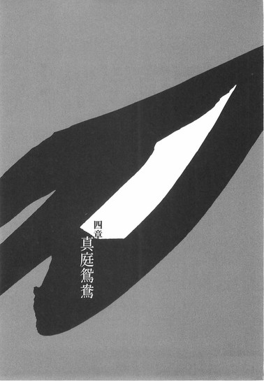
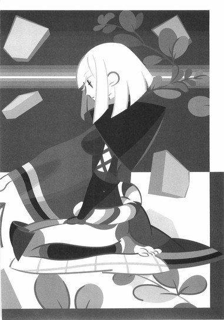
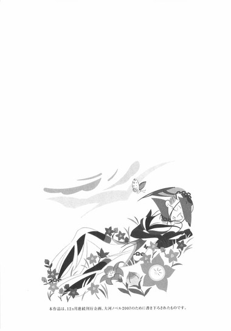

| [西尾維新] 刀語09 | |
| 西尾維新 | |
| (2015) | |
|
刀語 第九話 王刀・鋸
西尾維新
|
底本データ
一頁16行 一行42文字 段組１段
「ツルギ」、以後「ツルギ」に置換え注略。
「この二十年の間に本当に無名になっちまったんだな、虚刀流って」
出羽は天道将棋村──。
無刀の剣士・鑢七花と奇策士・とがめは、
王刀『鋸』を振るい、心王一鞘流を
たった一人で守る汽口慚愧の道場を訪ねる。
とがめがめぐらした奇策に、全身全霊で
攻め入る汽口！ 一方で、否定姫配下の
元忍者・左右田右衛門左衛門による真庭
忍軍への残忍な粛清は静かに続く──！
刀語、第九話の対戦相手は、
心王一鞘流当主、汽口慚愧！
序章
■ ■
尾張城下──家鳴将軍家直轄内部監察所総監督、本名不詳、経歴不明の否定姫の住まう否定屋敷。
その一室で、屋敷のあるじ、否定姫は──佇んでいた。
あかりも灯さず。
座らず、立ちっぱなしで。
ただ──佇んでいる。
無表情である。
この国に住まう者としてはまず異端な、尾張幕府の人間としてはおよそ異常な、金髪碧眼の彼女だが──しかし、誰よりも和装がよく似合った。
着こなしていると言うべきなのか。
不意に。
否定姫は──天井に向けて、鉄扇を開く。
「まあ、あの不愉快な女──奇策士の強さっていうのは、肯定する強さなのよね。ああ、これって前にも言ったかしら？」
流暢な日本語で。
よどみなく彼女は語り始める。
「対するわたしの強さというのは言うまでもなく、もちろん否定する強さ──だからあの不愉快な女とこのわたしとの戦い、せめぎあいというのは、言うなれば肯定力と否定力との戦いであり、せめぎあいなのよね──」
わたしが否定姫なら、彼女は肯定姫と言ったところなのかしら。
彼女は少し笑って、そんなことを言う。
「──何もかもを肯定しようという、己の弱さもこの世の醜さもすべて呑み込んで肯定しようというあの女の強さは、確かにわたしにとって脅威よ。だからわたしはあの女を否定した。思い切り、全身全霊で否定した。最初から怪しいと決めてかかった」
否定姫の名に恥じず。
徹底的に──否定した。
「今だって、確たる証拠もないのに疑い続けている。けれど──結果から見れば、わたしはこれまで、あの女に負けっぱなしなのよね。あの女の奇策の所為で、何度左遷されたか、数えるのも飽きちゃったわ──あんたもそのたびに同じ被害に遭ってるんだから、他人事じゃないでしょ？」
天井裏にそう声をかける否定姫。
しかし返事はない。
構わず、否定姫は続けた。
「対して、わたしの側は、彼女に致命的な被害を与えたことは一度もない──仕事の邪魔をし、ちょっかいを出すことは多々あれど、結局そのたびに、彼女はそれを切り抜けている。綺麗に返し手を打たれているわ」
そう言う。
己の戦果を──否定する。
「まあ何度罷免されようと結局は同じ位置に戻ってきちゃうのが、このわたしの素晴らしいところなんだけどね──」
茶化すように言うも、やはり天井裏から反応はない──否定姫は鉄扇を閉じ、それを帯の中に差し込んだ。
「逆に言えば、そういうところ、甘さを残している女なのよね──本人はそれでも覚悟を決めているつもりなんでしょうけれど、わたしから見ればまだ隙があるわ。とは言え、これではわたしはあの不愉快な女のお情けに与かっているようなものよね」
もっとも、それも彼女の肯定力ゆえなんだと思えば、必然的、あるいは構造的な隙ではあるのでしょうけれど──と否定姫は付け加える。
少なくとも。
彼女の分析に──隙はないようだった。
「わたしと同様に、過去の知れない女......その生まれに、きっと何らかの原因があるんでしょうけれど。それもわたしと同じく──ね。けれど、あの女の過去なんて調べようがないわけだし、そんなことを考えても仕方ないか──」
そこで否定姫は少し黙る。
そのまま彼女はしばらく思案するようにして、それから、「ふむ」と、ひとりで納得したように頷く仕草をした。
「......ひょっとして、これ今思いついたんだけれど──あの女の強さって、肯定力だけじゃないのかもしれないわね。そうよ──そもそも肯定力と否定力なら、基本的に否定力のほうが強いはずだものね──」
人は否定する生き物。
何かを否定することで、己を形成する生き物。
だから。
だからこそ──彼女は否定姫になったのだ。
「だからわたしは彼女よりも強いつもりでいたけれビ──あの不愉快な女は、そういう次元では戦っていないのかもしれない。わたしはむしろ優位な立場で彼女と戦っているつもりだったけれど──彼女はそもそも、違う視点でわたしをとらえているのかもしれない。ふうん......なるほどなるほど。これはひとつの見解だわ」
否定姫は一拍呼吸を置いて。
それから、静かに言う。
「そうね。奇しくも、前にこの話をしたときに、あんたがそう言っていたんじゃない──『あの奇策士は』『時には何も考えていないのではないかと思わせる所作を見せる』って。それは確かに、あの女の肯定力の表れだと思うけれど......違う、もっと根本的なことなのかもしれない」
だから、と否定姫は続けた。
「奇策士──策を練るのが策士ならば奇策しか練らないのが奇策士。一切の武装を放棄し、知恵を絞ることのみで成り上がる軍師──そう言われたら、普通、物事を考えることに長けた性格をどうしても想定してしまうけれど──あの女は考えることに長けているのと同時に、考えないことにも長けているのかもしれないわ」
そう言って、否定姫は再び鉄扇を取り出す。
今度はゆっくりと──口元を隠すような動きで、その鉄扇を開いた。
「考えても仕方ないことがあったとしても、普通、人は考えてしまうもの──考え続けてしまうもの。しかし、意図的に思考を停止できるのだとすれば──それは策を練る上で、かなりの優先権になるんじゃないの......？それが彼女の切り札なのだとすれば、わたしはかなり、かまととぶられていたことになるわね──そういうところはただのどじっ娘だと思っていたけれど、侮っていたかもしれないわ」
そうね、そうだったのね──と、一人で頷く否定姫。
これまでの疑問が一気に解消したかのような、そんな表情だった。
ひとしきり頷いたあとで、彼女はもう一度、鉄扇を閉じて、その先を天井裏に向けた。
「右衛門左衛門──いずれにしても、このたび尾張幕府直轄預奉所軍所総監督奇策士とがめどのが立案した四季崎記紀の刀集めは、言うならばわたしの狩り場よ──あの女との長き因縁も、ここらが決着のつけどころでしょう。放っておいても勝手に潰れてくれる公算が高かったけれど──十二本中八本までも蒐集したとなっては、残り三本を集め、そして最後の一本まで辿り着くという可能性も──まあ、五分五分かしらね」
否定姫は含みをもたせて、そんなことを言う。
宣言する。
「あわよくば、わたし達は漁夫の利を得ましょう。伝説の刀鍛冶、四季崎記紀の完成形変体刀十二本はわたし達が揃え──そしてついでに奇策士の本性も暴く。......錆白兵の裏切りはわたし達にとっても計算外だったけれど、そのおかげで早めに復権できたのだからよしとしましょう。あれはあれで天才過ぎて、扱いづらいところもあったしね。ふふ──まあ、あの鬱陶しかった真庭忍軍もまとめて潰せるとなれば、刀集めというこの企画は、あの女が提出したにしてはそう悪くもないんじゃないかしら？先祖の恨みなんて関係ないとは言っても、真庭忍軍が潰れたとなればやっぱ溜飲くらいは下がるでしょ。ねえ──右衛門左衛門」
からかう調子でそう言ったが──
天井裏からは、何の反応もない。
そして。
そこに至って──「ああ」と、否定姫はようやく気付いたようだった。
「そうだ......今、あいつ、いないんだっけ」
■ ■
そういうわけで、五巻、八巻と同じく、今回も序章は否定姫さまでお送りしました！
相棒の左右田右衛門左衛門氏はただいま真庭忍軍十二頭領がひとり、『神の鳳凰』こと真庭鳳凰を暗殺するために尾張を離れており不在です！
そして主人公のふたりは九本目の刀を求めて天童に到着！
では今月も行ってみよう！
対戦格刀剣花絵巻！
無体絶対時代劇！
刀語の第九巻♪
一章 心王一鞘流
■ ■
「お話はわかりました」
その女。
心王一鞘流十二代目当主──汽口慚愧は、話を聞き終えてから、静かな口調でそう言った。
二十畳ほどの広さの道場の中。
道着姿で正座する彼女の前にはふたりの人間が、同じく正座している。
ひとりは絢爛豪華な衣装を身に纏った白髪の小柄な女。
ひとりはぼさぼさ頭の、上半身はだかの背の高い男。
奇策士とがめと──虚刀流七代目当主、鑢七花である。
「しかし」
汽口慚愧は続ける。
厳しい表情のまま。
三人の中央に横たえられた、一振りの木刀に──目を落として。
「残念ながら、わたしは心王一鞘流の当主として、たとえどういう理由であろうとも──この王刀『鋸』を、あなたがたに渡すわけにはいきません」
■ ■
これまでのあらすじ。
または白髪の奇策士、とがめというひとりの女の、これまでの半生──本名不詳、経歴不明の彼女の、知られざる半生。
彼女は奥州の顔役、飛騨鷹比等の娘である。
奥州一帯を治めていた大名──飛騨鷹比等。
彼が尾張幕府家鳴将軍家に対して起こした反乱が、全ての始まりだった。
長らく大きな争いのなかった天下泰平の世において、それはひとつの事件だった──飛騨鷹比等が投げた一石は、瞬く間に日本全国津々浦々へと波及していった。
全国規模の反乱となった。
それは周到な準備と綿密な作戦の賜物だったのだろう──平和な世の中で危機管理意識がいちじるしく低下していた幕府が相手だったとは言え、あっという間に戦局は進み、気が付けば幕府は抜き差しならない状況にまで追い詰められた。大袈裟ではなく、尾張幕府は転覆寸前にまで追い詰められたのだ──実際、そうならなかったのは運がよかったからとしか言いようがないだろう。
あるいは。
虚刀流六代目当主──鑢六枝のおかげとしか。
戦国六大名の一名、徹尾家に仕えていた剣士──鑢六枝。
刀を使わない無刀の剣士である。
彼は少数精鋭と言えば聞こえはよいが、実情はただの寄せ集めに近かった少人数の軍隊で無謀にも奥州へと乗り込み、見事、飛騨鷹比等の暗殺に成功したのだった。
その手刀で──飛騨鷹比等の首をはねた。
旗印としての大将を失った反乱軍は、見るも無残なほどの反撃に遭い、ほんのわずかな期間で壊滅させられた。
飛騨鷹比等の跡を継ぐ者もいなければ、飛騨鷹比等の後に続く者もいなかったのである。
そして──反乱は終了し、戦争は終わった。
平和な世の中が。
天下泰平の世が──戻ってきたのである。
めでたしめでたし。
と、なったのは、あくまでも尾張幕府側の人間と、そんな雲の上の争いなどに興味関心を持たない一般大衆のみである──反乱軍側、中でも飛騨鷹比等に近かりし位置にいた者は、ただでは済まない。
まず戦死。
生き残っても刑死。
逃亡したところで頓死である。
尾張幕府は平和な世を作りはしたものの、決して平和主義の組織というわけではない──反乱軍に対しては容赦のない鉄槌を下した。
誰一人温情をかけられることなく──例外などあるはずもなく、鉄槌は下された。
飛騨鷹比等の一族の者など、言うまでもない。
一族郎党──皆殺しである。
めでたい要素などなにもない。
しかしそこに、あるはずのない例外があった。
それがのちの奇策士──奇策士とがめだった。
彼女は見ていた。
己の父親が、鑢六枝によって討たれる瞬間を。
周囲の者からは烏の濡れ羽。ともてはやされていた彼女の黒髪は、そのとき──色を失った。
そして彼女は、その瞬間には既に誓っていた──復讐を。
尾張幕府に対する復讐を。
父親を殺されたことへの復讐を──その白髪に誓っていた。
まだ幼児と言われるような歳の頃である──だが彼女は、戦局が引っ繰り返され、次々と味方が倒れていく中、誰も彼もが抵抗の余地さえなく殺されていく中、そんな子供の身でありながら──生き残った。
子供だったからこそ生き残れた、などという問題ではない──むしろ彼女は子供らしからぬ才覚で、恥も外聞もなく、矜持も何もかなぐり捨てて──生き抜いた。
生きたかったからではなく。
死にたくなかったからではなく。
ただただ復讐するためにのみ──生き抜いた。
既にこの頃の生き様から──尾張幕府にとっての敗戦処理の網を潜り抜けたその生き様から、奇策士としての能力の片鱗を見せていたと言っていいだろう。
もちろん。
逃亡を疑われてはいつまでも追われる身だ──どこかで身代わりの死体は用意した。それを飛騨鷹比等の娘の死体だと思わせて、晴れて彼女は、本名不詳、経歴不明の身となった。
それから、それなりの時間が経過する──その間、彼女は一秒たりとも気を緩めることなく手を打ち続け、失敗し続け、それでもなお手を打ち続け──ついに尾張幕府内へと潜入することに成功した。
完全な男社会である幕府内部に、彼女は絢爛豪華な衣装で切り込んだ。大人しく、目立たないように、ひっそりと計画を進行させる──などというまどろっこしい真似を、彼女はしなかった。
むしろ逆である。
女だてらに幕府中枢に踏み入った彼女は奇策士とがめを名乗り──自分を潰そうと動く者を逆に潰し返し、それを出世の足がかりとした。
くだんの否定姫もまた──そのひとりだった。
彼女との争いが、奇策士とがめの順調な出世の助けになったことは、それこそ否定しようのない事実である。
もっとも──いくら潰してもそのたび復権してくる否定姫に、奇策士とがめが苛立ちを覚えていたのは事実だったが。また、否定姫の『内部監察官』という役職も、とがめにとっては不安材料だったが──ともかく。
彼女はそうやって、幕府内で陣取り合戦権力闘争を繰り返し──ありとあらゆる手練手管で、上り詰めるところまで上り詰めた。
その結果得たのが家鳴将軍家直轄預奉所軍所総監督という地位である。
こうなってしまうとちょっとやそっとでは崩せない、確固たる牙城を築いたということで、それは確かに、尾張幕府に対する復讐という彼女の持つ唯一の目的に着実に近付いているということでもあったが──同時に手詰まりでもあった。
ここまで偉くなると、誰しもそうそうとがめに手を出せなくなってしまうのだ。
ちょっとやそっとでは崩せない、確固たる牙城──である。
否定姫だけはそれでもとがめのことを目の仇にし続け、争いは続いたが──それはもう、目的や出世とは何の関係もない、ただの感情のぶつけ合いにも似た、天敵同士の争いになっていた。
向こうが内部監察所総監督であるだけに、あまり利点のない、むしろ不利益だけの争いだ。
このままだと削り殺される。
消耗して──いつかは倒れる。
だからこそ、とがめはまずは全力で、真庭忍軍の協力を仰いでまで否定姫を潰し（──もっとも、それでも彼女はしばらくのちに復帰してくるのだが──）、窮余の策としての奇策を打ち出した。
それが伝説の刀鍛冶、四季崎記紀の作りし十二本の完成形変体刀集めである。
四季崎記紀については短い説明が必要となる。
尾張幕府が天下泰平の世を作るその以前、いわゆる戦国時代のことだった──いくさ場を駆ける剣士達の間にある噂が流れていた。
刀の噂である。
どんな流派にも属さない、異端の刀鍛冶の作った刀を振るえば、まさしく一騎当千の働きができるという──逆に言えば、その刀鍛冶の作った刀を持つ剣士を敵に回したときは、どうしたって勝てっこないから逃げるしかない──
その刀は変体刀と呼ばれ。
その刀鍛冶の名が四季崎記紀である。
彼の作った変体刀の数はずばり千本。
国同士の争いにおいて、その変体刀の所有数こそが、勝敗を分けるとまで言われ──それは実際、その通りの結果となっていた。
戦国で鎬を削った二十五ヵ国の勝敗は変体刀の数によって決した。
戦国の覇者──今で言う旧将軍は、四季崎記紀の作りし変体刀を、最終的には五百七本、所有していた。
集めも集めたりである。
あるいは、これで天下を取れないほうがどうかしている──のかもしれない。
彼は四国、土佐から──全国を制覇した。
だが、このときには、彼の心は既に毒気にあてられていた。
毒気。
四季崎記紀の刀の発する毒である。
彼は戦乱の世を終わらせながらも──まだ止まろうとはしなかった。否、止まれなかった。過半数もの変体刀を集めた彼は──すべての変体刀を集めずにはいられなかった。
そのために彼はできる限りのことは全てやった。
国作りも。
戦後処理も新体制も、全て放棄するかのように──躍起になって、刀を集めようとした。
既に高齢の身である──残された時間は少なかった。
手段を選んでいる場合ではなかった。
彼の暴走のもっとも顕著な例は、言うまでもなく刀狩令──この国において最悪と名高いあの法令である。
剣客狩り。
この国に存在する刀という刀、剣という剣を全て四国の地に集めようという恐るべき法令だ──当然、戦国終了を記念して清涼院護剣寺に刀大仏を建立しようという、聞こえのいい理由はあったが──その真の理由は剣客を狩ることですらなく、四季崎記紀の変体刀を集めることにあったのだ。
そしてそのなりふり構わない努力は実る。
全土から四百八十一本の刀が、彼の下へと集められた──合計九百八十八本。
残り十二本。
しかしこの十二本が曲者だった。
曲者であり──際物だった。
それら十二本こそが、四季崎記紀の作りし変体刀の中でも真打──完成形変体刀と呼ばれる十二本だったからである。
絶刀『鉋』。
斬刀『鈍』。
千刀『ツルギ』。
薄刀『針』。
賊刀『鎧』。
双刀『鎚』。
悪刀『鐚』。
微刀『釵』。
王刀『鋸』。
誠刀『銓』。
毒刀『鍍』。
炎刀『銃』。
この十二本だけは、集めることがとうとう叶わなかった。
どころか、この十二本の蒐集に失敗したばかりに──彼の力は削がれ削られ、最終的に天下の覇者でありながら、国力は五万石を下回ってしまったほどだった。
結果、跡継ぎのいなかった彼の家は滅び──その功績とその足跡を、現在の家鳴将軍家が引き継いだというわけである。
喉もと過ぎれば熱さを忘れる──という例えではいまいち牧歌的過ぎるが、しかし平和な時代が続けば血生臭い時代のことを忘れてしまうのが人間というものである。
否、それは忘れようと願うからこそかもしれない。
いつしか、伝説とまで呼ばれた四季崎記紀という刀鍛冶の名は、戦国を支配した変体刀の存在と共に忘れられていく。
集められた九百八十八本の変体刀も──尾張城の一室で、刀としての役目も果たさずに、無為な時間を過ごしているばかりだった。
そして。
奇策士とがめは──そこに目をつけた。
旧将軍でも成し遂げられなかった刀集め。
それを為せば──確実に功はなる。
手柄を上げるも武勲を立てるも難しいこの平和の世において──確実に出世の足がかりとなる。いや、それどころか──
恐らく、将軍の首にまで手が届く。
功なり──讐もなる。
登りつめた崖っぷちで、とがめが考え出した究極の奇策──四季崎記紀の完成形変体刀集め。もちろん、自分から言い出すのではなく直属の上役からそう言い出すように仕向ける程度の小細工は当たり前のように施したが──彼女のその企画立案は、まず本気にされてもいなかったのだろうが、採用された。
しかし成功もあれば失敗もあり、またそのふり幅が大きいからこその奇策である。彼女はこの変体刀集めにおいて、二度の大きな失敗を経験することになる。
まずは、否定姫潰しにも協力を仰いだ真庭忍軍の裏切り。
そして真庭忍軍の後釜として選んだ、当時の幕府が抱えていた日本最強の剣士──錆白兵の裏切り。
旧将軍の失敗を踏まえての刀集め、順調に集まったはずの刀をそれぞれ一本ずつ、裏切りの際に奪われるという失態を犯した。
出世どころか──没落の危機だった。
彼女の築いた地位は、もちろん確固たる牙城ではあるが──そこまでに用いた手段は決して真っ当ではなく、ただそれが顕在化しなくなったというだけで、幕府内に敵が多いという状況自体は変わっていない。
同じ本名不詳、同じ経歴不明、同じ女だてらといえども、幕府内においてうまく立ち回っている否定姫とは違う。
もしも落ちたら──二度と這い上がれないだろう。
そうは言っても、刀集めは既に開始されている──
そこで彼女は更に奇策を錬った。
それは窮余の策と言うのにも苦しい、まさに苦し紛れの策に等しかった。
飛騨鷹比等──自分の父親を殺したかの男に、刀集めを依頼しようとしたのである。
先の大乱を抑えた英雄──
しかしその後、島流しの憂き目にあっていたかの男を。
虚刀流というかの流派を。
再び、世に引っ張り出そうとした。
四季崎記紀の変体刀の毒にあてられることなく──かつ金の魅力に揺らぎもしない無刀の剣士を、よりにもよって刀集めに協力させようという──まさしく奇策である。
どころか。
己の父親の首をはねた張本人を、自らの復讐行為に利用しようという──とがめにしてみれば苦渋の判断以外の何でもない、最終選択だった。
そして辿り着いた島が丹後の深奏海岸から更に海の向こうに浮かぶ名もなき無人島である。
いや、二十年前、鑢六枝とその家族が流されて以来、そこは無人島ではなく──また、不承島という名が与えられてはいたのだが。
しかしそんなことはともかく。
とがめが協力を仰ごうと思っていた相手である、そして父親、飛騨鷹比等を殺した張本人である剣士虚刀流六代目当主、鑢六枝は死んでいた。
およそ一年前のことだったらしい。
そして──その代わりに奇策士とがめが出会ったのが、鑢七花だった。
虚刀流七代目当主──鑢七花。
二十年前。
四歳の頃に、父親と共に不承島に流され──以来十九年間、父親から一本の日本刀として鍛え上げられた、鑢六枝の実の息子である。
面影は──あるように思えた。
古い記憶だが、六枝の姿を忘れたことはない。
鑢六枝が飛騨鷹比等の首をはねる場面を──忘れたことはない。七花のほうが、六枝よりも背が高いようだったが──
そして彼女は。
「鑢七花。わたしに惚れていいぞ」
鑢七花を。
己の刀として──選んだ。
「おれはあんたに惚れることにしたよ」
そして鑢七花もまた──
奇策士とがめの刀であることを選んだ。
鑢七花と奇策士とがめ──彼らふたりの刀集めの旅の始まりである。
まずは不承島、真庭忍軍十二頭領のひとり、真庭蝙蝠から決して折れない硬き刀、絶刀『鉋』を取り返し。
次に因幡、下酷城城主、宇練銀閣から恐るべき切断力を誇る刀、斬刀『鈍』を奪い。
続いて出雲、三途神社の長、敦賀迷彩から千本で一本という数多の刀、千刀『ツルギ』を貰い受け。
更に巌流島、真庭忍軍同様の裏切り者、錆白兵から脆き硝子細工のような刀、薄刀『針』を回収し。
そして薩摩、鎧海賊団船長、校倉必からは絶対無双の防御力を持つ刀、賊刀『鎧』を頂戴し。
加えて蝦夷、凍空一族の生き残り、凍空こなゆきからはこの世で最も重い刀、双刀『鎚』を受け取り。
それから土佐、鑢七花の実姉、鑢七実から、四季崎記紀の作りし変体刀の中でも最も凶悪な刀、悪刀『鐚』を抜き取り。
ついには江戸、不要湖を守護するからくり人形の日和号から、人形にして刀という日和号自身、微刀『釵』を蒐集した。
合計八本！
奇策士とがめによる刀集めは、既に終盤戦へと突入していた──そして、今のところ最後の刀集めである、江戸・不要湖における微刀『釵』の蒐集には、ひとつ、別の意味合いがあった。
壱級災害指定地域である不要潮は、かつて四季崎記紀が刀作りの工房として使っていたらしいのだ──日和号はその管理者であり守護者だったのだと推定される。
日和号を撃破し──いや、人形にして刀というその厄介な構造上、正確には撃破することはできなかったのだが──彼らは、工房があったと思しき場所の探索にあたった。
がらくた──木片と金属片、瓦礫に埋もれた湖である不要湖を工房にしていたというのはある意味四季崎記紀らしいが、あるいはその場所を探れば、残る四本──王刀『鋸』、誠刀『銓』、毒刀『鍍』、炎刀『銃』の情報があるかもしれない。
あれば。
奇策士とがめはまた一歩、復讐の成就へと近付くのだった──以上、これまでのあらすじ。
しかし──
■ ■
「......なかったな」
一通り探索を終えたあと、鑢七花は言った。
底なしの体力を持つと言っていい、鍛えに鍛えた彼の肉体ではあるが、しかし一日中、ひとりでがらくたの掘削作業にあたったとなると、さすがに疲弊の色は隠せなかった。
それでなくとも日和号との戦闘の直後のことである。
「むう。そうか」
その掘削作業を脇で見ていた奇策士とがめは不満そうにそう言った。
ちなみにこの女、一度たりとも手伝おうとしなかった。
「一応......ここに昔、人が住んでいたらしい形跡はあったから、この不要湖が四季崎記紀の工房だっていう否定姫の情報自体は嘘じゃなかったんだろうけれど......でも、残り四本の刀の所在・所有者を探る手がかりとなりそうなものは何もなかったな」
「ふむ。まあ、こんなものか」
とがめは少し離れた場所に、縛り上げた上に少しだけ解体して置いてある日和号──微刀『釵』に目をやり、
「これ以上の作業は無駄だな」
と言った。
「やや心残りではあるが、行くとしよう」
「元に戻しとかなくていいのか？」
「がらくたの山だぞ？ 掘り出したものを埋めたところで何も変わらんよ。まあ、そなたが日和号を退治してしまったからな。この地域から壱級災害指定地域の看板は外されるやもしれぬが──それでも不要湖は不要湖だ」
「そっか。尾張に帰るんだな？」
「いや」
とがめは、ここで首を振った。
「次は天童に行こうと思う」
「て──天童？」
七花は、とがめからのその意外な返答に驚いた。
「て、天童って──どこだっけ」
「だから、そなたには記憶力がないのか。真庭忍軍の真庭鳳凰が言っておったであろう。変体刀の所在を三つ──陸奥死霊山、江戸の不要湖、そして出羽の天童、とな」
「ああ──ああ、思い出した」
陸奥の死霊山にあった悪刀『鐚』は、鑢七実に先んじて奪われてしまっていたが──しかし、元はそこにあったことは違いない。そしてここ、不要湖には、確かにからくり人形・日和号という、微刀『釵』があった。
情報通りである。
しかし、だからといって、出羽の天童にもまた四季崎記紀の変体刀があるはずという推測は、あまりにも楽観的に過ぎる。
真庭鳳凰は卑怯卑劣が売りの忍者なのである。
二つの真実にひとつの嘘を抱き合わせることなど、平気の平左でやってのけるだろう。それどころか、暗殺専門のしのび集団である真庭忍軍のことだ、何らかの罠が仕掛けられている可能性がある。もしもその罠に嵌ってしまった場合──取り返しのつかないことになってしまうかもしれない。
同盟を結んだとは言え、真庭忍軍もまた、完成形変体刀十二本を蒐集しようと目論んでいるのだから──一体何を仕掛けてくるかわかったものではないのだ。
「......そう言ったのはとがめのほうじゃねえかよ。だからしばらくは尾張で情報収集に勤しむって......この不要湖探索も、期せずして微刀『釵』の蒐集劇になっちゃったけど、そもそもは情報収集活動の一環だったろう」
「そうなのだがな──しかしこの不要湖で何も見つからなかったというのは、少しばかり具合が悪いのだよ。そなたが先ほど言ったよう、否定姫の情報自体は嘘ではなかったというのが、尚更具合が悪い──つまりここで何も見つけることができなかったというのは、わたしの責任ということになる」
「え？ そんなことはないだろ──たぶん、四季崎記紀自身が変体刀の情報となるような資料はあらかた処分しちまってたってことじゃないのか？」
「まあ、恐らくはそういうことなのであろうがな。しかし組織の中でその理屈は通じん。まして刀集めが想像以上に幕府の上層部に受けがよいということもある──ここで成果が上がらなかったとは言いづらいのだ。せっかくの追い風を乱したくはない」
「かあ。政治的な話だな」
七花はうんざりした顔になった。
とがめのために動いているとは言え──この手の小難しい話は、やはり苦手なのだ。
「残念ながら政治的な話をしているのだ」
とがめはにべもなくそう言う。
彼女としても、これは微妙な選択なのだろう。
ただ単純に刀集めのことだけを思えば、ここではやはり尾張に帰って情報収集の再開をするべきなのだろうが──しかし、とがめにとって四季崎記紀の完成形変体刀集めはあくまでも手段であって目的ではないのだ。
そこを見失ってはならない。
「というわけで、ここでわたし達は何らかの成果を得たということにする──幕府にはそのように報告しよう」
「いよいよあんたの書く報告書が、ただの嘘になってしまう日が来たんだな......」
「まったくだ。これなら最初からあることないこと書き連ねておけばよかったわ」
「いや、それは最初からそうしていたんじゃないのか？」
「そうではない。一応一線は引いておった。が、それもそろそろ限界だな──幕府で本当に読み物扱いされておるとなると、当然、あの不愉快なお姫さまの眼にも止まるということだ。ばか正直にあるがままを記しておれば、かなりの高確率で足下をすくわれることになる」
「それは御免こうむりたいな──ここまでせっかくうまくいってるんだ。今更横槍を入れられたくはないぜ」
「うむ。どうもあのお姫さまは、この刀集めに対して、他の連中とは違う立ち位置で臨んでおるようだしな......興味本位とは思えん。おそらく何かを企んでおるのであろう。......あの女が読者となることをまったく想定せずに、最初の頃の報告書を書いておったことは、返す返すも悔やまれる」
「仕方ねえじゃん。あんたにとっちゃ、お姫さまの復権は予想外のことだったんだろ？」
「まあな。しかし、そういう目で見れば右衛門左衛門の動向も非常に気になるところではある......」
「ふん......そりゃ、あいつの動きは、おれも気になるぜ。しかし、なるほど。おれにもわかったぞ、とがめ。政治的な話は政治的な話だが、しかしそれとは別に、幕府内にひとつ牽制を入れておこうという発想なわけだな？」
「そういうことだ。やれやれ、注目を集めるというのもよし悪しだな。これまではむしろ、注目を集めていなかったがゆえに好き勝手できていたところがあったのだが──これからはそうもいかぬ。人目を気にして動かぬとまずい。否定姫の目に限らず、な」
そういうことのようだった。
小難しい話というより──それではまるっきり、難しい話である。
もっとも、まさかとがめがそういうところで七花の力を借りようとするわけもないので、その辺りはとがめに任せておけば問題ないのだろうけれど。
役割分担である。
七花は──簡単な話を担当していればいい。
簡単至極な、わかりやすい話を。
「まあ、要するにこの不要湖、四季崎記紀の工房跡で、何かが見つかったということにするんだよな？だとしたら──何が見つかったことにするんだ？」
「だから、天童だ。今のところは真庭鳳凰の例の情報に頼るしかあるまい」
「罠かもしれないのに？」
海千山千の忍者からの情報。
裏切りに裏切りを重ねた、真庭忍軍のかしら──真庭鳳凰。
果たして、その情報が罠である可能性は──
「まあ、こうなれば罠に飛び込むのも一興だ。罠でなければ得なだけだし──そう分の悪い賭けでもあるまい」
そう言うとがめの口調には、しかし、七花から見れば、何らかの確信があるようにも見えた。少なくともただの消去法で、選ばざるを得なくてその道を選んだとは思えない──
「......ひょっとして心当たりがあるのか？」
「心当たりと言っていいのかどうかはわからぬが──天童と言えば、ひとつ、こういうときに足がかりになりそうな道場があってな」
「道場？」
「うむ」
とがめは力強く頷き。
そして──これからのあらすじを語る。
「わたし達の向かう先は出羽は天童──将棋村内、心王一鞘流剣術の道場だ」
■ ■
そして、翌月。
長月。
冒頭の汽口慚愧の台詞へと返るのである。
「残念ながら、わたしは心王一鞘流の当主として、たとえどういう理由であろうとも──この王刀『鋸』を、あなたがたに渡すわけにはいきません」
二章 汽口慚愧
■ ■
かつて長刀と二刀の決戦が行なわれた周防の巌流島と刀大仏を擁する土佐の鞘走山清涼院護剣寺、このふたつの場所がすべての剣士にとっての聖地であるのならば、出羽の天童、将棋村と言えば、すべての棋士にとっての聖地である。
将棋の発祥は印度。
平安時代にはもうこの国に伝わってきていた。
尾張幕府が世を統べ、平和な時代に突入し、先の大乱を除けば戦争らしい戦争も起きない現在において、軍師の実力を測る定規として使われるのが将棋という競技なのだと言ってしまっていい──つまり、この時代、日本において将棋は単なる室内競技ではなかったのだ。
当然、奇策しか練らない奇策士とは言え軍師であることに違いないとがめも、将棋の心得はあり──またそうであるがゆえに、この天童、将棋村を訪れたことは、これまでに幾度かあった。
ゆえに。
そこに存在する剣の道場、心王一鞘流の存在も──あらかじめ、知っていたのである。
■ ■
「とはいえ──世代は変わっていたな」
翌日。
村に数ある旅籠にいつものように身分を偽って宿泊したふたりは、とりあえず旅の疲れを癒すために一晩ぐっすりと眠ってから、まず朝食を取った。
聖地ということは、そのまま観光地であるということでもある。旅籠の数には不自由しなかったし（幸い、観光の季節から外れていたようで、観光客でごった返しているということもなかった）、部屋に持ってこられた朝食もまた、それなりのものだった。
「世代ねえ」
箸を置いて、ごちそうさまを言ったところで、七花は昨日のことを思い出す。
村の真ん中辺りに位置したあの立派な道場──そしてそこの主であった、汽口働悦のことを。
女性にしては背は高め──とは言え、よく見ればいつぞやの敦賀迷彩のように目立って長身というほどでもない。たぶん、姿勢がいいから、本来よりも大きく見えたのだろう。
直毛の長い黒髪──ちょっと前までのとがめと同じくらいありそうな、長い髪。
身体つきはむしろ細い。
大して鍛え上げられているようにも見えない。
しかし、その細い全身に漲って、そして周囲に発せられている気迫のようなものは、七花も感じざるを得なかった。
近寄りがたいものさえ感じた。
言葉遣いこそ丁寧だったが。
汽口は──まるで抜き身の日本刀のような女だった。
「年齢は──そなたと同じくらいかな」
「ってことは二十四、五か。ふうん......もうちょっと若く見えなくもなかったけれど、女の歳はよくわからんな」
「ふむ。まあ、そなたはそうであろうよ」
「とがめがおれより年下だってことはわかるんだが」
「ちぇりお！」
殴られた。
素直に殴られるのは久し振りだった。
もちろん、とがめは七花よりも年上だ──七花もそのことはよく知っているので、これは冗談の類である。
じゃれあっているだけとも言えた。
「誰が童子属性だ、誰が」
「いや、そんなことは一言さえも言っていないが......」
「そなたの姉に髪を切られてしまったせいで、益々幼く見えるようになってしまったことは認めるがな」
「そんなことをわざわざ認めなくてもいいよ......」
呆れて首を振る七花。
その辺りは、彼にとってはどうでもいい事柄だった。
「しかし、どうしたものかな。なんっつーか、久し振りに真っ当な刀集めって感じになったじゃねえか。ここんところ、変則的なやり方が続いていたからな──」
「まあ、ここ三ヵ月はそうだったな」
凍空こなゆき──双刀『鎚』。
鑢七実──悪刀『鐚』。
日和号──微刀『釵』。
どれもこれも、刀集めと言うよりは、別の要素のほうが強かった。
もちろん、刀集めがおろそかになっていたということではないにせよ──完成形変体刀の所有者とこういう真っ当な形で対峙するのは、久し振りのことである。
「とがめの読み通りに心王一鞘流の道場に王刀『鋸』が受け継がれていたというのは、これは運がよかった部類に入るのかな？」
「うーん......微妙なところだなあ。なんとも言えぬよ」
とがめは困ったような顔をして、腕を束ねる。
「微妙か」
「うむ。決して読み通りでもないしな。わたしとしては、歴史ある心王一鞘流の道場をおとなえば、完成形変体刀に関する何らかの情報が得られる可能性があるかもしれぬと思っておっただけなのだが──」
七花よりも遅れて食事を終えて、ここでとがめは箸を置いた。
「──それはもちろん、こうして比較的あっさりと王刀『鋸』が見つかったこと自体は幸運ではあるのであろうが、しかしそれをあの場所であの女が保有しておったことは、あまり幸運ではないのかもしれぬなあ」
「どうして」
「わたし達の目的は刀の発見ではなく刀の蒐集であるからな。わたしの見るところ、一筋縄ではいかんよ。あの女──十二代目汽口慚愧は」
「ふむ」
それは七花も同意するところだった。
少し話しただけでもわかった。汽口慚愧は、これまでの刀の所有者の誰とも似ていない──まったく違う種類の人間なのだ。
真庭蝙蝠とも宇練銀閣とも敦賀迷彩とも錆白兵とも校倉必とも凍空こなゆきとも鑢七実とも日和号とも違う──強いて言うなら。
真人間──なのである。
「変体刀の所有者はどこか壊れているというのが、これまでの通例であったはずなのだがな──あれは汽口の意志の強さの表われなのか、それとも王刀『鋸』という刀の特性なのか──」
「王刀、ね」
汽口は。
決して渡すわけにはいかないと言いながらも──それでもとがめと七花に、その実物、四季崎記紀の作りし完成形変体刀十二本が一本、王刀『鋸』を検分させてくれた。
それは──木刀だった。
長さは柄の部分を入れても三尺にも満たない。
木刀のこと、鞘もなければ鍔もない。
当然、刃文も何もあったものではない。
ただ、整った木目があるのみ──である。
古い時代を感じる──しかしそれと同時に、まるでついさっき作られたのではないかというような真新しさも感じさせられる、見る者にそんな矛盾した印象を与える木刀だった。
よく手入れされているということなのだろう。
その刀が一体どのように、歴代の汽口慚愧に受け継がれてきたのか──一見しただけでそれがわかろうというものだった。
そして、だからこそ。
それを譲り受けることは難しい──
「......だが、しかし、一瞬騙されそうになるが、日本刀って言っておいて木刀っていうのは、やっぱおかしいよな......何が『鋸』だ、切られる側じゃねえかよ。ここんとこ刀の形状さえ保っていない刀が多かったから、ついついその場では納得してしまったが」
「もう疲れるからそういうところに突っ込むのはやめよう」
とがめもゆるりと首を振った。
諦め顔である。
「ただ、王刀が木刀であったせいである種の盲点になってしまっていたことは確かであろうな。変体刀の中でもそれなりに隠密性は高い──ということだ。王刀『鋸』が何に主題を置いた刀なのか、そもそもどういう刀なのかということも、まあもちろん気になるところではあるが──しかしさしあたっての問題は汽口慚愧本人のほうだ。最初からああも強硬に、きっぱりと断られてしまっては、少なくとも交渉を進める余地はない」
「確かに、なまじ話が通じる相手だけに厳しいよな。どうしようもない。......とがめは、先代の汽口慚愧のことは知ってるんだよな？今の汽口慚愧の父親......なのかな」
「いや、祖父だったように思う。父親は早逝したと聞いていたな。跡継ぎをどうするつもりかと思っておったが、そうか、孫娘が継いでおったのか──ということは、当然、先代の汽口慚愧も亡くなっておるのかな」
「引退しただけかもしれないけれど──まあ、あの女は道場に一人暮らしみたいだしな。そう考えるべきか......しかし、とがめ。あの道場、あんなだだっぴろいのに汽口以外は誰もいなかったよな。普通、あの時間帯には門下生みたいな連中がいるもんじゃないのか？」
「あー。それを訊いてしまうか」
とがめは少し困った顔をして、「それはなあ」と、やや説明しにくそうに、言い出した。
「この村の歴史ともかかわってくることなのだが──とは言え、あまり複雑な説明をしたところでそなたには退屈なだけか。うむ......、まあ、わかりやすいところだけ抜粋して簡単に説明しよう。七花。そもそもこのあたりは割と剣術の盛んな土地柄だったのだ」
「ん？ いや、そうは見えないが──」
むしろ文化的な村だという印象を受けた。心王一鞘流の道場が村の真ん中、一等地とも言えるような土地にあるのが、ひどくそぐわなかったくらいである。実際、村の中には剣術道場など、そこひとつしかなかったのだ。
「だから──昔の話だ。昔の話なのだ、七花。戦国時代が終わって、旧将軍期を経て、尾張時代に突入すれば、当然、剣士の活躍の場など激減する──時代にあわせて人は生き方を変えねばならない。つまり──剣術は廃れた」
「す、廃れたって」
あまりに直截的なその言葉に七花は面食らったが──しかしとがめはまるっきり口調を変えずに、そのまま続けた。
「廃れたのだから廃れたと言う他あるまいよ。まあ、そなたのところの虚刀流や、宇練銀閣の居合術、あるいは、そうだな、真庭忍軍の連中のように──生き様を変えられない不器用な連中と、この村に住まう剣士達は違ったのだ。幸い、この地には剣の代わりになるものがあった──」
「それが──将棋か」
棋士にとっての聖地──である。
無人島育ちの七花は当然、将棋のやり方など心得てはいないが、しかしこの村でその競技がどのように扱われているのかは、一晩過ごせばよくわかる。
何せ宿泊しているこの部屋の卓上に、当たり前のように将棋盤が置かれているくらいである。
刀大仏ならぬ将棋大仏があったとしても、もう七花は驚きもしないだろう。
「それで？ この辺りではみんな、剣を捨てちゃったってこと？」
「捨てなかった者もおる。その捨てなかった者の最後のひとりが──十二代目汽口慚愧ということなのであろう」
心王一鞘流。
幕府内でも名の知れた流派だという。
しかしその名の知れた流派も、いまや門下生もおらず、跡取りもいない──そんな立場へとおいやられたというわけだ。
あるのは、造りだけは立派な道場と。
そして──王刀『鋸』のみ。
「......そりゃ、そう簡単には譲ってくれないよなあ。流派の誇りみたいなもんじゃねえか。伝統の証明って言うかさ」
「そう。それが交渉を更に難しくする」
「虚刀流で言えば腕を一本寄越せと言われているのに近いわけだろう」
「......いや、そこまでの話ではないとは思う」
ならば。
腕というよりは──むしろ心かもしれない。
七花はそう思う。
「いつだったかな──そうだ。宇練銀閣とやりあう前だっけ。とがめ、あんた言ってたよな──『たとえば刀の所有者が善人だったとき、そなたはどうするつもりなのだ？』って。今回はそういう場合だってことか？」
「汽口慚愧が善人かどうかはさておいて──状況としてはそういうものなのかもしれぬな。実際、それでもこなゆきのときのように交渉が可能だというのならば構わなかったろうが──どうやらそうもいかぬようだ」
「ふむ」
頷く七花。
「かと言って、刀を賭けての勝負に乗ってくるような性格にも見えなかったぜ。王刀『鋸』を必要としてはいるんだろうが、それ以外の完成形変体刀を欲しているようには思えなかった。敦賀迷彩のときとは違う──かと言って、校倉必のときのように、刀の他に欲するものがあるかと言うと、それもまたなさそうだった」
「言われるまでもないよ。ふん。わたしのような人間からしてみればああいうのがもっとも厄介だ──欲なし見栄なし、されど気高き誇りあり。王刀がどのような刀なのかはわからぬが、少なくともあの女は王道を歩む者のようだな──」
「先代の汽口慚愧もそうだったのか？」
「面識があるわけではない。わたしは奇策士として、なるべく武道方面にはかかわらぬようにしておったからな──が、立派な剣士だったと聞いておる。つまり、武道方面にかかわらぬようにしておったわたしにも聞こえてくるくらいの立派さだったということだ。ひょっとすれば、そのご仁ならば虚刀流の存在も、あるいは知っておったかもしれぬな──さすがに若い現当主の汽口は、どうやら知らなかったようだが」
「この二十年の間に本当無名になっちまったんだな、虚刀流って」
別に知名度を欲するつもりはないけれど。
それでも『現当主』として、七花には一抹の寂しさがあった。
「ま、仕方あるまい。さて、どうしたものか──本当に、こんなことなら、この天童には王刀はなかったという落ちのほうがよほどすっきりしたというのに──」
とがめはやれやれ、と大仰にため息をついた。
七花はその言葉で、「そう言えば」と、まったく別のことに思い至る。
「天童に完成形変体刀があったってことは──真庭鳳凰がおれ達に流した情報は、全部が全部、まるっきりの真実だったってことになるよな。否定姫の復権もそうだし、踊山で聞いた姉ちゃんのことについての情報も嘘じゃなかったわけだし──」
忍者の情報が──すべて正確だった。これはむしろ、しかし逆にいっそう警戒しなければならないような状況である。
それくらいのことは、さすがに七花でもわかる。
つまり。
それらの情報と引き換えにしても構わないほどの何がしかを──彼らが企んでいるということになるからだ。
「確かに、ここには何の罠もなかったようだしな。しかしただ同盟を結びたかっただけだとも思えぬ──あるいは、絶対の自信があったということなのかもしれぬ」
「絶対の──自信？」
「残りの三本──つまり、誠刀『銓』、毒刀『鍍』、炎刀『銃』を、わたし達よりも確実に早く手に入れることができるという自信だ。真庭忍軍の忍術にどのようなものがあるのか、わたしも確実に把握しておるわけではないからな──」
「まあ、それはそれであんたにとっちゃ好都合なんだろ？言ってたじゃねえか。所在のわからない刀は連中に集めてもらって、その後、お互いの持っている刀を賭けての勝負をしたほうが手っ取り早いかもしれないって──」
「まあ、そういう考え方もあるというだけのことだ。そううまくいくとも限らぬ──楽観的になれる要素はあまりない。それに、たとえそうするのだとしても」
奇策士とがめは話を戻す。
「鳳凰から正しい情報を流されていたのだとすれば、この王刀『鋸』だけは、少なくともわたし達が蒐集せねば話にならぬ。多少、意地になってでもな。さしあたって──」
とがめは──言いながら、卓上の将棋盤に手を伸ばした。いや、将棋盤ではなく、その上に置かれている駒箱に手を伸ばしたのだ。
蓋を開け、中から一枚、適当に駒を取り出す。
「──まあ、やはりこの辺りを取っ掛かりにするほかはなさそうだな」
「この辺りって......将棋をか？」
七花は話の繋がりが読めず、とがめに訊いた。
「将棋がどう取っ掛かりになるんだよ」
「幸いなことに、この村では揉めごとは全部将棋で解決するものだと、相場は決まっておるでな」
王刀『鋸』の所在が判明こそしたものの、お世辞にも決していいとは言えない状況であることにもかかわらず──とがめは不敵に微笑んで、そう答えたのだった。
■ ■
心の鬼を心で斬る。
これをもって慚愧と名乗る。
心王一鞘流──十二代目汽口慚愧の道場を、七花ととがめのふたりが再び訪れたのは、更に翌日のことだった。
門の外から呼びかけても返事はなかった──やむなくふたりは勝手に敷地内へと這入った。内側から響いてくる気勢の声からすれば、留守ということはなさそうだったからだ──案の定、汽口慚愧は道場の中で素振りの最中だった。
ひとりで。
道場中央で──木刀を振るっていた。
その木刀は、どうやら王刀『鋸』のようだ──七花は例の共感覚を覚えながら、そう思った。まあ実際、一昨日見せてもらったときにしたって、七花がこれまでの完成形変体刀から受けてきた共感覚と同じものを感じなければ、それを王刀だとは確信できなかっただろう。
すっかり完成形変体刀の鑑定人と化している七花である。
しかし、稽古に王刀『鋸』を使っているのか......。
てっきり、普段はどこかに保管しているものだと思っていたけれど。
「えいっ！ やあっ！ とおっ！」
そんな大声を張り上げながら、汽口は木刀──王刀『鋸』を振るう。
一体どれだけの時間、素振りを続けているのか──全身に汗をかいている。そしてとにかく姿勢がいい、と七花は感じる。素振りの最中──木刀を振っているどの場面、どの瞬間を切り取ったところで、わずかにも体勢に乱れがない。
完璧過ぎる、とさえ感じた。
稽古にしろ実戦にしろ、七花がこれまで見てきた剣士──宇練銀閣や錆白兵、あるいは元々は剣士だった敦賀迷彩や、虚刀流の鑢六枝、例外的天才の鑢七実、それに京の道場や道なりで戦った剣士達まで含めて──見てきた剣士は、多かれ少なかれ、ある程度の余裕、遊びを身体に残しているものなのだが──汽口の動きからはそれが感じられない。
精一杯。
いっぱいいっぱい。
身体の機能を限界まで引き出して──破綻すれすれの状況で、剣を振るっているように見える。何かひとつでも間違えば、それで折れてしまうような危うさを秘めていて──
──一筋縄じゃいかないな。
改めて七花はそう思った。
さすがは完成形変体刀の所有者と言うべきなのか。
そう考えれば、稽古でありながら王刀を振るっているのは、それだけ真剣に稽古に取り組んでいるということなのかもしれない。
木刀でありながら──真剣に。
「............」
汽口慚愧。
正面から正々堂々と戦ったところで、相当に苦戦しそうな相手だった──まあ、そうは言っても正当派の剣士が対戦相手だというのは、七花にとっては喜ばしいことではあるのだが──とてもそんな風に楽観的にはなれそうもない。
──まあ。
そもそも決闘が成立するかどうかも、これからのとがめの交渉にかかっているのだが──
「えいっ！ やあっ！ とおっ！」
素振りを続ける汽口は、まるで勝手に道場内にまで這入ってきたとがめと七花に気付いていないようだった──いや、どうやら実際に気付いていないようである。
恐るべき集中力だったが、ここまで来ればむしろ周囲への注意力が欠けていると言われても仕方がないだろう。
ふたりは声をかける時機も逸して、そのまま漫然と、汽口慚愧の練習風景を見守ることとなってしまった──汽口慚愧がふたりの存在に気付いたのは、彼女が規定通りの素振り回数を、どうやら終えたらしいその後のこととなる。
「......あれ？」
手ぬぐいで汗を拭きながら。
彼女はそんな、とぼけた声をあげた。
「あなたがたは──昨日の」
「......邪魔しておる」
とがめは言った。
どんなに偉そうに振舞ったところで、いささか気まずい挨拶である。
七花も何となく、頭を下げた。
それに対し、汽口は──ありていに言って不法侵入者であるふたりに対し──姿勢よく、礼をしたのだった。
そして顔を起こして、
「失礼。すぐに身なりを整えてまいります」
と言う。
「いや、構わぬ──そのままでよい」
とがめは言った。
ちなみに、とがめの身分素性は既に昨日の段階で明かしている──尾張幕府家鳴将軍家直轄預奉所軍所総監督、奇策士とがめ。そして今、『天下国家のため』に、再び刀集めが行なわれていることも──率直に告げた。
汽口の性格上、そう言われれば案外すんなりと王刀『鋸』を差し出すのではないかという読みがあったからだが、しかしその読みはさすがに甘過ぎた。
返答は例の通りである。
「しかし、とがめどの」
汽口は、丁寧な口調ではあったが──やはりきっぱりと、その返答を繰り返した。
「何度来られようとも──わたしはこの王刀を、あなたがたにお譲りするわけにはいきません。この木刀は我が心王一鞘流の誇りを伝えるものであり、また心王一鞘流当主の証でもあるからです」
「うむ。そなたの言い分はよくわかった──同じ話を繰り返すつもりはない。だがそう言われて、わたし達がはいそうですかと引くわけにいかぬこともわかるであろう？」
「暴力に訴えると言うのならば」
汽口慚愧は──木刀を構えた。
即応、と言っていい動きだった。
「こちらにも迎え撃つ準備があります。いつでも──いらしてください」
「そ、そう喧嘩腰になるでない──」
これにはさすがのとがめも引いたようだった。
短気ではないのだろうが──あまりに短絡的だ。
頑なと言うのか──これでは本当に交渉を進める余地がない。
大体、蒐集対象が木刀となると、他の刀以上に、暴力に訴えるという真似はやりづらいのだ。薄刀『針』ほどではないにしても、強度においてどうしても劣る木刀が相手では、下手な戦い方をすれば折れてしまう。
折れてしまえば蒐集も何もあったものではない──戦うのならば。
あくまでも双方合意の上で、一対一の戦いに持ち込むのが最上の条件──！
「ただ、わたし達に一応の機会をくれてもよかろうと言っておるのだ。門前払いを食わされたとなればいかにも体裁が悪い」
「............」
「そなたが王刀『鋸』の所有者に相応しい器の持ち主であったとわたしが報告できれば、この件は丸く収まるでな──」
「そういう──ことですか？ しかし──」
汽口はそれでも、納得しかねるような反応だった──あまり芳しい反応とは言えない。その仕草を深読みすれば、どうにかして、ごね始めたふたりの客人を追い返そうという算段を立てようとしているようにも見える。
しかしそこにとがめは畳み掛けた。
何であれ迷ってくれれば──付け入る隙はある。
「だから、汽口どの。このわたしとまずは将棋で勝負して欲しい──そしてその勝負でもしもわたしがそなたから勝利を収めることができれば、その王刀『鋸』をかけて、ここにいる虚刀流七代目当主、鑢七花と剣を交えて欲しいのだ」
三章 門下生
■ ■
結果は惨敗だった。
と言っても、奇策士とがめが汽口慚愧に対し将棋で遅れを取ったという意味合いではない──むしろその対戦においては、彼女はきっちりと、計画通りの勝利を収めた。
揉め事は全部将棋で解決する。
それはいかにも大袈裟な物言いではあったが、しかしこの天童においては十分に通用する規約なのである──もちろん聖地とは言え、将棋を嗜まない者もまれにはいるだろうし、汽口慚愧がその類の人間であればこの作戦は成り立たなかったが、しかし先日道場を訪れたときに、その床の間に、やはり将棋盤が置かれていたことを、目敏い奇策士は見逃していなかった。
これが『鑢七花と決闘をして、七花が勝てば王刀「鋸」を譲り受ける』という条件の勝負を申し込んだのであれば、汽口は恐らく断っただろう──相手の承諾を得られない、問答無用の、それこそ暴力沙汰へとなだれ込んでいたところである。
心王一鞘流外の者に渡すくらいならと、王刀を自ら圧し折るという可能性まで考慮すれば、下手にそんな提案はできたものではない──だからとがめは緩衝をひとつふたつ、入れておくことにした。
それが将棋である。
しかも、将棋を直接的な条件には持ってこない──とがめが将棋で勝てば、そのとき七花と汽口との勝負が成立する、と、もうひとつ段階を踏むことによって、相手から妥協を引き出そうとした。
汽口からしてみれば、とがめとの対局に勝てばそれで問題ないし、とがめに負けたところで、今度は七花との対戦に勝てばそれで問題がない──王刀『鋸』を守り切れるのだから、危険度は低く予測されるはずである。
心王一鞘流は殺人剣ならぬ活人剣。
無用な争いを好まず、ただ剣のみを追求する流派であるとは言え──しかしあの稽古の具合を見ていればわかるように、その腕前に自信がないわけでもあるまい。
将棋の腕前のほどまでは読めないが──この村に住んでいて将棋を嗜む以上は、ある程度の自信はあるはずだ。
幕府からの遣いを追い返すいい口実になるとすれば、とがめからのこの申し出に乗ってくる確率はそう低くないと読んだ──そして乗ってきてくれさえすれば、王刀『鋸』を蒐集できる確率は相応に高いと読んだ。
とがめは将棋が得意なのである。
幕府内でも、それについては認められていた。
そもそも、以前この村を訪れたときも、もちろん軍師としての仕事の要素も強かったが、将棋の聖地とはどういうものだろうと探る、観光の意味合いもあった。これは彼女にとっては珍しい行為である──軍師の嗜み、と言えばそれまでのことではあるが、しかしその才覚はやはり並々ならぬものがあった。
実際に対戦してみれば、なるほど、汽口のほうもかなりの腕前ではあったが──とがめはそれをうまくあしらってみせた。
当然、あしらったとは思わせない。
百七十八手。
あまり意味があるとも思えないので、いちいちその棋譜を記したりはしないが──とにかく拮抗した対局を演出してみせた。その文脈で言うなら、とがめの敵は汽口本人というよりも将棋盤そのものであったと言っていい。
思い通りの棋譜を盤上に描くというのは、ことの外骨の折れるものなのだ。
しかし、だからと言って変に圧倒的な勝ち方をして、汽口に臍を曲げられても困る。あくまでもこの将棋対決は王刀『鋸』蒐集のための前哨戦に過ぎなかったのだから。
まあ、付け加えて言うならば、そもそも、あまり手加減するような必要は感じなかった──少なくとも幕府内で行なわれているお遊びとは、まったく段階の違う遊戯として、勝敗は決した。
「ありません。うまくやられました」
汽口も、勝負に悔いは残さなかったようで──そんな風に潔く投了した。全力でやってもよかったのではないかと、とがめが少しだけ思ってしまうほどの、それは潔さだった。
とは言え将棋に興じるのは、やはりとがめの本意ではないのだ──そこからが本番である。
本番のはずだった。
しかし、それがとんだ茶番になってしまったのは──ひとえにそれは、汽口が真人間であったゆえだと、そう表現することができるだろう。
汽口は、
「では」
と、対局を終えて、すぐに立ち上がった。
もとより道着姿である。
王刀『鋸』は対局中もすぐ脇に置いてあった──ほとんど肌身離さず、彼女は王刀を所持しているのだ。
つまり、いつであっても臨戦態勢。
そのまま七花（将棋の規則を一切解さない彼は、ふたりの対局中、ずっと暇そうにしていた）との対決に移るのも辞さないといった感じだった。
その辺りも──潔い。
とがめはここではっきりと、十二代目汽口慚愧という女に好感を抱いたのだった。
それは、相手を見るだけの余裕が心に生まれたということでもあっただろう。自分の将棋の腕には自信があったとは言え、それを汽口が上回らないという保証はどこにもなかったからだ。相手を見ただけで技量がわかるなどということは、将棋の世界ではありえない。
「長時間の対局で疲れたであろう──休憩を挟んでも構わぬのだぞ」
「いえ、それには及びません」
汽口は厳しい表情のままで言った。
「わたしも武門の娘──武士に二言はありません。王刀『鋸』、つまりはこの心王一鞘流の道場の看板を賭けての勝負。受けて立ちましょう」
常に張り詰めた糸のような精神状態の女である──確かにこれでは、休憩を取ってもあまり意味がないように思われた。
「つーことは」
対して。
そんな精神の張り詰め具合とはおおよそ縁がなさそうな気楽そうな調子で、七花はそう言って起き上がり（寝ころんでいたのだ）、そして、手っ甲を取り外した。
草鞋は道場にあがる際、既に脱いでいる。
つまり──これで七花も、気楽な調子ながらも、汽口と同じ臨戦態勢に入ったということだった。
「それなら、早速始めようぜ──木刀相手って戦いは、考えてみれば京の都以来だ。まあおれ達にとっても大事な刀だ、折ったりしないで無事に決着をつけてやるから安心しろ──ただしその頃には、あんたは八つ裂きになっているだろうけどな」
そのあまりにも早過ぎる決め台詞に、さすがにとがめは不安を覚えた──しかもその予感は直後に的中することになる。
「わかりました。では七花どの──見たところ用意はされていないようですから、木刀と防具はこちらで貸し出しましょう」
汽口慚愧は。
当たり前のようにそう言ったのだ。
「え？」
七花はきょとんとなる。
「ぼ、木刀と──防具？」
「はい。ああ、ご遠慮なさらず──かつて門下生が多数いた頃のものが、いくらでもありますから。古いものですが、手入れは怠っておりませんのでご心配なく。七花どのの身体の大きさに合う防具となると限られてくるでしょうが、まあないということはないと思います」
「い、いや──」
戸惑いを隠せない七花。
「──その、何て言うか......、おれは刀や防具は使わないんだけれど......」
「はあ？」
途端。
元々鋭かった汽口の視線が、更に輪をかけて鋭くなる。
「何をふざけたことを仰っているのです──防具なしで実戦稽古などを行ない、怪我でもしたらどうするのです」
「け、怪我でもしたらって」
「まして、刀を使わぬなどと──人をばかにするのも大概にして頂きたい」
「じゃなくて、きょ、虚刀流──」
──は。
知らないのだったか。
「己の身体を一本の日本刀として使うからこその虚刀流──で、だから、つまり、剣はなくとも戦えるんだよ」
「それ以上冗談を言うようでしたら、わたしは本気で怒りますよ」
汽口は、七花の言い分にまったく耳を貸さなかった。
取り付く島もないとはこのことである。
「で、でも──」
「剣士が刀なしで戦えるわけがないでしょう！」
七花がそれ以上言うまでもなく。
既に汽口は本気で怒っているようにも見えた。
「それとも、わたしに、防具もつけず、刀も持たぬ者を相手に剣を振るえと言うのですか──それこそ心王一鞘流を侮辱している！」
「............」
「武器も防具も必要ないとあくまで仰るのならば、今すぐお帰り願いたい──わたしは無力な者を優位な立場から嬲って喜ぶような趣味は持っていません！」
七花は助けを求めるように、未だ将棋盤の前に座ったままのとがめのほうを見たが──しかし、とがめにとってもこの展開は予想外だった。
七花は武器を持たない。
言うならば七花自身が武器である。
無刀の剣法とは言え、しかし世間一般から見ればそれが徒手空拳の拳法であることは否めない──しかしそれを理由に対決を拒まれることなど、正直言って、とがめは想定していなかった。
刀を持たない相手を見れば、普通は油断し、慢心してくるものである──虚刀流という存在を知っていても尚、それでもどうしても、そこで軽く見てしまうことは仕方ないだろう。中には敦賀迷彩のように、その虚刀流という戦い方を見越して罠を仕掛けてくるようなしたたかな者もいたが──
汽口慚愧はまるで逆だった。
むしろ。
七花に、木刀とは言え、刀を持つように強制してきた──！
「......し、七花」
「お──おう」
「すまぬ。どうしようもない」
「............っ！」
正々堂々の対決を建前としている以上──この申し出を断るわけにはいかないのだ。
無刀の剣士、鑢七花は。
木刀を持って戦いに臨むことを余儀なくされた──そして。
結果は惨敗だったのである。
■ ■
鑢七花は四季崎記紀の完成形変体刀集めの旅において、既に二度の負けを経験している──一度は蝦夷の踊山における凍空こなゆき戦、もう一度は土佐の護剣寺における鑢七実戦である。最終的に変体刀の蒐集に成功しているから、とがめに言わせればその二回は負けとして数える必要はないらしいが（それに、こなゆき戦はともかく、七実戦では後に雪辱を果たしているのだが）、それでも負けは負けだろう。とは言え、今回の汽口慚愧に対する敗北は、その二回の敗北とはまったく違うものだった──七花本人も、正直対応に悩む、そんな敗北だったようだ。
落ち込むのもおかしいし、かと言って開き直るのも難しい。
無様な敗北の結果、道場を辞して旅籠に戻ってきてなお──七花は心の落ち着けどころを見つけることはできないらしかった。
しかしそれは奇策士とがめの心中に較べれば、それでも穏やかなものだったかもしれない──汽口がああ出てくることはまるで想定外で、その結果がこれなのだとすれば、これは軍師たるとがめの失態と責められても仕方がないからだ。
少なくともとがめ本人はそう思っている。
しかし、まさか汽口は思ってもいないのだろう──この世に、剣を持ったほうが弱くなる剣士がいるなどということは。
──虚刀流。
その起源は戦国の乱世にまで遡る。
虚刀流開祖にして初代当主、鑢一根──彼は日本刀の持つ、長くて重いという特徴について考えた。長いということは斬りやすいということであり、重いということは斬りやすいということである──しかしそれは同時に、長いから斬りづらく、重いから斬りづらいということでもあるのだ、と。
長所と短所は表裏一体。
利点と欠点は表裏一体。
普通はそう思い、呑み込むはずの絶対矛盾を──鑢一根は呑み込まなかった。呑み込むのではなく、その考えを更に一歩先にまで推し進めた。
即ち。
長くもなく重くもない刀があれば──
それこそ最強なのではないかと。
真に最強の剣士を目指すのであれば、剣士は剣を捨てるべきなのではないかと。
だから彼は剣を捨てた。
剣を捨て、以来十年山にこもって、己自身を日本刀のように鍛え上げた。
己が肉体を刀のように研ぎ上げた。
彼は刀そのものとなった。
そして編み出した流派が虚刀流──である。
ただ、この挿話には、奇策士とがめも七花から聞くまでは知らなかった落ちがついていて、実際のところ、鑢一根は刀剣を扱う才能がまったくなかったがゆえに、必要にかられて剣を捨てたということなのだった。
闇に包まれた流派──虚刀流。
相応しくない落ちがついたものである。
そして、その『刀剣を扱う才能がまったくない』という鑢一根の特性は、その後の鑢一族にも受け継がれている──先代当主の鑢六枝はもちろん、かの天才・鑢七実でさえも、その呪縛からは完全に自由にはなっていなかった。
当然──鑢七花のことは言うまでもない。
実際、七花は刀剣を扱う才能を有さないがゆえに一度は命が助かっているくらいだが、しかし、今回はその真逆と言ってよさそうだった。
立ち合うにあたって木刀を使用すること。
それを条件につけられてしまえば、これまで数々の強敵を打破してきた──錆白兵を打ち破り、日本最強の剣士の称号を獲得している七花と言えど──汽口に対し、手も足も出るわけがなかった。
それだけではない。
防具も彼にとっては邪魔だった。
汽口にしてみれば純粋に、言ってしまえば善意で防具を七花に貸し出したのだろうが、それは七花にとっては枷以外の何物でもなかった。
上半身はだか、裸足で戦うのが常套の七花にしてみれば──防具など、あればあるだけ邪魔なのである。
だから武器を与えられ、防具を与えられたことで、最早七花は文字通りに抜き差しならない状況にまで追い込まれたのだが──しかし、絶望的な状況は、更にもうひとつ付け加えられた。
規則、である。
汽口と七花の戦いは、規則でがんじがらめにされていた。
剣道の規則だ。
これまでの立ち合いは、すべて規則などあってなきがごとしだった──試合形式を取っていても、ただ『はじめ』の合図で始まって、『決着』の言葉で終わっていただけのことである。
今回は違った。
審判役をとがめが務めたところまでは同じだったが、開始線や場外、構え方に至るまで、汽口はいちいち細かく指示した。
七花に反則という概念はない。
実戦に反則も何もあったものではないからだ。
真庭忍軍のように卑怯卑劣が売りとまで開き直るつもりはないにしても、そのあたりの認識のずれが、今回は悪い風に働いた。
虚刀流が殺人剣であり。
心王一鞘流が活人剣であるという違いが、如実に表れたということだった。
汽口の剣は──ある意味、競技としての剣術なのだ。
殺し合いの剣ではない。
精神修養のための剣なのだ。
根差すところも目指すところも同じであっても──虚刀流とは本質がまるで違う。
もちろん、いざ実戦に臨むとなれば、心王一鞘流だって真剣を手に取るのだろうが──しかし、その実戦なるものが、この天下泰平の世には存在しないのである。
唯一の例外が、虚刀流六代目当主鑢六枝が英雄として戦った、つまりとがめの父親、飛騨鷹比等が起こした先の大乱だが、その大乱に、どうやら心王一鞘流は不参加だったそうである。
当然だ。
その頃にはあの道場には、既に門下生はほとんどいなかったのだから。
当時の当主、十一代目汽口慚愧はその頃には、実戦に参加できるような年齢でもなかった──現役の剣士ではなかった。
つまり──長らく、心王一鞘流は木刀のみで剣を振るっている、そういう流派なのだ。
これでは勝敗は最初から見えている。
そして、見えていた通りの結果になった。
規則にのっとって行なわれた一本勝負である、実力差ゆえに滅多打ちにされることこそなかったが──それでも素人目にもあからさまな、七花の不器用な木刀捌きにはとがめとしては目を覆いたくなるものがあった。
まだしもとがめが剣を振るったほうがましなのではないかと思ったほどだ。
障子紙なみの強度を自称する、兎にさえ負ける自信があるとのたまったことのあるとがめにしては、それはありえないと言っていい反応だった。
「......しかし、話には聞いていたものの」
旅籠の部屋に戻ってからも、随分長い間、ふたりは黙りこくっていたが、とうとうその重い沈黙に耐え切れなくなって、とがめのほうからそう切り出した。
違う話題を選ぼうとも思ったが、しかしそれもいかにもわざとらしい。
「そなた......本当に剣が使えぬのだな」
「うん......」
力なく、頷く七花。
「どういう理屈なのだ。変体刀よりもその体質のほうがよっぽど不思議だわ。あの女の言う通り、武器を持って弱くなるというのは考えられんぞ。言い訳と思われても仕方ない」
防具が邪魔になるというのは、まあわからぬでもないがな──と、とがめは言う。
七花は困ったような顔をする──まあ、言われても本人に説明できるようなことではないだろう。できないことの理由を訊かれて答えられるようなら、それはもう克服しているようなものである。
大体──七花が刀を使えるとなると、それは七花が虚刀流としての本分を見失ってしまうことになってしまう。
「しかし、そうは言ってもだ。そうなるとそなたは、不承島でどのように稽古を積んできたのだ？前々から気になっていたのだが、実際に刀剣を相手に稽古をしなければ習得できないような技も、虚刀流にはあるのではないか？」
「だから、そういう技は習得できていない」
七花は答えた。
「おれが見た実際の剣ってのは、まにわにのところの真庭蝙蝠が持っていた、絶刀『鉋』が最初だよ。不承島は刀剣の持ち込み禁止、そう言ったろ？もちろん、どんな技があるかくらいは聞いていたから、本土に渡ってから実戦の中で練習して、新たに習得した技はあるけどさ」
「なるほど。それでそなた、戦うごとに技の幅が増えておるというわけか......『型』としてのみ、知っていたということなのだな。自分で勝手に技を考えておるのかと思っておったが」
「姉ちゃんなら、『型』としてのみ知っていれば、それは習得したも同じだっただろうけれどな」
「天才過ぎるぞ......」
どうでもいい疑問がひとつ解決したところで、しかしそれは今の事態の解決には何も繋がらない。
「さて、どうしたものか」
とがめは、できる限り深刻味を帯びさせない口調で、そう言って天井を仰いだ。
「悪質な冗談のようにばかげた状況ではあるが──これはこれで手詰まりだ。ふん。とんとん拍子で話が進むから、どこかに落とし穴があるのではないかと思ってはおったがな──よもやこんな形で足下をすくわれることになろうとは思いもしなかった。汽口のほうに悪意がないだけに、逆手にも取りづらい感じだな──」
「これを考えてやってるんだったら、見事過ぎて言葉もねえけどな」
七花は言う。
「対等な立場でないと勝負する気が起きない、か。しかも相手に怪我をさせようとも思わない──厄介な性格だぜ。まるっきり、四季崎記紀の刀の毒にあてられてるとは思えない」
「あてられて──おらぬのかな」
戦っている場面を見ても──やはり、これまでの刀の所有者とは、汽口は明確に違うようだった。
狂気も妖気も感じられない。
あえて言うならば、天真爛漫な性格をしていた凍空こなゆきがその属性に一番近いかもしれないが、彼女の場合、とがめと七花と出会ったときは、まだ刀の所有者となって間もなかった。
もとより毒にあてられるだけの時間はなかっただろう。
しかし、汽口の場合は──先代から王刀『鋸』を受け継いで、それなりに時間は経過しているだろうのに──
「......ひょっとすると、それが王刀『鋸』の特性なのかもしれぬな」
「うん？ それって、どれだよ」
「だから──四季崎の刀の毒を持たぬ、四季崎の刀であることが、だ。砕いて言うなら毒気のなさこそが、王の証とでもいうのか......」
「しかし、それじゃあ変体刀の定義から外れちまうじゃねえか」
「定義から外れたものを作ってみたくなったのかもしれぬぞ。これまでの変体刀を見る限り、四季崎記紀という壊れた刀鍛冶は──とにかく例外を好むようだからな。まあ、そもそも、刀の特性が発揮されるところまで、そなたがあの女の実力を引き出せなかったと見るほうが、真っ当なのかもしれぬがな」
「それを言われちゃ立つ瀬がねえよ」
七花は苦笑いを浮かべた。
「とは言え、こなゆきのときや姉ちゃんのときとは違って、悔しいってわけじゃねえんだよな──木刀持たされて防具つけさせられて、規則でがんじがらめにされて、あれで勝てたらそのほうが虚刀流じゃねえんだから」
「であろうよ。しかし、七花」
とりあえず、とがめはそれを確認しておくことにした──聞いてどうなるというわけではないが、それは解消しておくべき疑問のひとつではあった。
「仮に、防具なしの無刀、反則なしであの女と対峙していたら──果たして、そなたは勝利を収めることができておったか？」
「......蹴りはありか？」
「蹴りも肘も頭突きもありだ」
そう言ってから、とがめは少し迷ったが、しかしこれはあくまでたとえ話だと割り切って、
「手加減も無用。必要とあれば斬り殺しても構わぬという条件だ」
と、言い切った。
七花はそれを受け、
「うーん」
と、まずは思案するようにしたが──しかしその結論は、
「わからない」
だった。
「とがめがさっき言った通り、あの女の実力は、まるで引き出せなかったからな──実際におれが実力を発揮できたときに、どんな風に対応されていたのかなんてわからねーし」
「印象でよいのだがな」
「印象を言えるような段階でもねーよ。でも、ただ......そうだな。それなら、試合中のことよりも、素振り稽古をしている姿を見たときの印象が参考になるかもしれないな」
「ほう」
「隙がないって、思ったよ。まるで、張り詰めた糸だった」
そのときのことを回想しているのだろう、七花は言葉を選ぶようにして、そう言った。
「気迫って言うのか、そういうのはひしひしと感じさせられたぜ。あれくらい真面目に剣の道に励んでる人間ってのは、初めて見た気がする」
それは──確かにとがめも同じだった。
ここまでの旅路、とがめと七花は様々な剣士を見てきたが──あそこまで剣に入れ込む姿を、見はしなかった。彼らにとって、剣術はあくまでも手段であり目的ではなかったはずだ。あの剣の申し子のような錆白兵にしたって、その剣で何を為すかということばかりを考えていた。
汽口は違う。
剣そのものが──彼女の目的であり、目的地である。
七花のようないい加減な、特に目的もなく、ただただ言われるがままに生きてきた人間にとって、ああいう、入れ込むものがある人間というのは、正直言って脅威だろう。
ちなみに、復讐のためだけに生きるとがめに七花が惹かれた理由も、基本的にはその脅威と同じところに根ざしているのだが──とがめの思考は、ここではそこまでは及ばない。
及ぶ必要のないことでもある。
「だから──まあ、素手、つまりおれの臨戦態勢で戦ったところで、苦戦はさせられるだろうな、とは思うぜ。まさか錆や姉ちゃん並の使い手だとは思わないけれど......それでも、これまでの刀の所有者の中じゃ、それなりの上位に食い込むことになるだろう」
「ふむ」
「一位と二位は鑢七実と錆白兵で不動だとしても、恐らく汽口は三位から六位の間には入っちゃうだろうな──」
策を弄する人間ほど、七花は苦手とする。
それは左右田右衛門左衛門が鑢七花に対して出した現在のところの結論だが──汽口は決して策を弄する人間ではないにもかかわらず、七花にそう思わせたのか。
ぞっとするような話である。
「......頭が痛くなってきたな。そんな使い手を相手に、木刀を持って弱体化したそなたが勝つ方法を考えねばならぬのか」
比喩でなく本当に頭痛がしてきた。
まるっきり想定外の事態である。
「錆のときや姉ちゃんのとき、日和号のときみたいに、何かいい作戦はないのかよ」
「作戦と言われてもな、基本的にわたしは戦闘そのものについては門外漢だ。あまり突っ込み過ぎると裏目に出ることもある......現に、薩摩で賊刀『鎧』の蒐集にあたったとき、わたしの提案した鎧通しは、校倉必には通用しなかったわけだしな」
「ああ。そんなこともあったっけ」
「大体、錆のときや七実のとき、日和号のときに立てたわたしの奇策は、あくまでもそなたの強度と練度が前提だ──そなたが弱体化しておるなどという余計な条件があっては、さしものわたしも打つ手がない」
「打つ手、ね──」
だから──手詰まり。
別にうまく引っ掛けたつもりはとがめにはなかったのだが、しかしその言葉から七花は将棋を連想したようで、
「そっちのほうはどうだったんだ？」
と、訊いてきた。
「あいつの将棋の腕前」
「まあ、そこそこだ。剣の道を選ばず、将棋一本に絞り込んでおれば、かなりの使い手になったであろう──わたしなど、相手にならぬほどのな」
「へえ。そこまで言うんだ」
七花は軽く驚いたようだった。
「つまり、文武両道って奴か」
「文武両道......まあ、そうなのかもしれぬ。文と武は、現実には両立不可能と言われておるがな」
「おれが武で、とがめが文。それでここまでうまくやってきたけれど──おれの武が封じられたとなると、ちょっとやばいな」
「やばいどころではないわ。最悪だ」
「でも、文においては、とがめのほうがいくらか勝ってるんだろう？」
「まあな。しかしむしろ、あれほど剣に打ち込んでおきながら棋力においてもあれだけの才覚を発揮できる汽口のほうを褒めるべきであろうよ」
「同じ手は、もう一度きくと思うか？」
七花は質問した。
汽口の将棋の腕前云々はあくまで前振りであって、本当に訊きたかったのはこの質問のほうだったらしい。
「とがめが将棋に勝てば、おれと汽口との対決が成立するっていう、例のやり方」
「話の持っていき方次第では、あと一度くらいは通じるであろうが......」
揉め事は全部将棋で解決する。
この村の相場である。
「......通じたところでなあ。それで成立する勝負があの有様なのであれば、どの道王刀『鋸』を入手することはできまいよ」
「その条件を取っ払うことはできないのか？ 汽口のほうは木刀持ちでも防具着用でも構わないから、おれは素手で戦うっていう風に、うまいこと持っていけば──」
「できまいなあ。その条件を呑んでくれるとは思えぬ。仮に、わたしが六枚落ちの状態であの女を負かしたとしても、無理であろう。逆の条件、あの女の側が武器なし、防具なしでというのならば、成立するのかもしれぬが──己が不利になることは許せても相手方が不利になることは許せないという、そういう性格だよ、あれは」
「............」
「たまにいるのだよ、そういう人間が──わたしのような智謀策略を巡らすことにしか興味のない人間には、理解に苦しむところだがな」
「真人間──か」
「あそこまで行き着いてしまうと、逆に人間らしからぬ存在だがな。心王一鞘流の道場から門下生がいなくなった理由も、何となくわかろうというものだ。かといって......」
と。
そこでとがめは、言葉を止めた。
部屋の外から物音が聞こえたからだ──誰かが廊下を歩いているような音。食事の時間にはまだ早い──旅籠の人間が夕飯を待ってきたというわけではないだろう。
だが、だとすれば、誰だ？
色んな可能性が頭に浮かんで消えるが──その考えがまとまる前に、襖が向こうから、
「失礼いたします」
という、丁寧な喋り方が聞こえてきたところで、相手の推測はついた。
入室を許可すると、案の定、そこにいたのは──汽口慚愧だった。
道着姿のままである。
いや、道場で会ったときに彼女が着ていた道着は汗でかなり濡れてしまっていた──ならば、その道着から別の道着に着替えたということなのだろう。
身なりを整えても、道着は道着。
どうやら彼女にとって、それはそのまま普段着でもあるようだった。小袖でも着れば、それはそれで似合いそうなものだったが──質実剛健なことこの上ない。
汽口は。
鋭い視線、厳しい表情で──座っているとがめと七花を見下ろしていた。
「ど──どうしたのだ。汽口どの」
戸惑いながらも、とがめは汽口に座布団を勧めた。しかし汽口は、「いえ、結構です。すぐに帰りますので」と、それを辞した。
宿泊している旅籠の場所は、宿の者には身分を偽っていることまで含めて教えてあった──だから彼女がここを訪ねてきたこと自体には不思議はないのだが、しかし──何の用だ？
勝負は終わったというのに、今更何の用で──
だが、汽口の用というのは、この場合、まさしくその勝負についてのことだった。
「とがめどの。先ほどの勝負なのですが」
「う、うむ」
「やはり、不公平があったように思うのです」
そんなことを──彼女は言い出した。
「とがめどのと七花どのが帰られてから、わたしも考えてみたのですが、七花どのがあそこまで弱かったとなれば、これは勝負が成立したとは言えません──不公平であったように思うのです」
「............」
「不公平は是正されねばなりません。よって」
汽口慚愧は宣言した。
真っ直ぐに、宣言した。
「七花どのを、我が心王一鞘流の門下生として迎え入れた上で、このわたしが直々に鍛え上げ、そののちに改めて、正々堂々の対戦ということで──如何でしょうか」
四章 真庭鴛鴦

■ ■
暗殺専門の異端のしのび集団、真庭忍軍。
その真庭忍軍を統べる十二頭領。
『冥土の蝙蝠』、真庭蝙蝠。
『逆さ喋りの白鷺』、真庭白鷺。
『鎖縛の喰鮫』、真庭喰鮫。
『首狩りの蟷螂』、真庭蟷螂。
『無重の蝶々』、真庭蝶々。
『棘々の蜜蜂』、真庭蜜蜂。
『神の鳳凰』、真庭鳳凰。
『巻戻しの鴛鴦』、真庭鴛鴦。
『読み調べの川獺』、真庭川獺。
『長寿の海亀』、真庭海亀。
『増殖の人鳥』、真庭人鳥。
『伝染の狂犬』、真庭狂犬。
かつては尾張幕府と密接な関係にあった彼らは、しかし、今や十二頭領のうち三人を残すのみとなった。
真庭鳳凰、真庭鴛鴦、真庭人鳥。
以上三名。
どうにも鳥の名ばかりが残ってしまった印象があるが──ともあれ、その三名が、久方ぶりに集合し、膝を突き合わせていた。
場所は伊豆の、人里離れた丘の上である。
そこは元・真庭の里ではなく、新・真庭の里でもない──彼らはもう、四季崎記紀の完成形変体刀を十二本集め切るまで、しのびの里には帰らぬと堅く心に誓っていた。
前回集合した際は、それでも六人の頭領がいた──集合するたびに、十二人から六人、六人から三人と、人数が半分ずつになっていく。
その数だけで判断するならば、最早真庭忍軍は壊滅状況にあると言ってさえよかった。
しかし。
「これが──毒刀『鍍』ですか」
真庭鴛鴦は。
目前に、あたかも聖剣のごとく突き立てられたその刀を感慨深げに眺めながら──そう言った。
禍々しい色の鞘に納められた、長い刀──いつぞや、真庭忍軍が所有していた絶刀『鉋』──同じく、鍔がない。
抜くまでもなく──既に毒を放っているような、触れることさえ躊躇わせる、見ていると思わず目を逸らしたくなる、そんな刀だった。
剣士ならざる鴛鴦でもそう思うのだ。
仮に一流の剣士がこの刀を見れば、どのような感想を持つのだろう──と、彼女はそんな風に思ったのだった。
この場に真庭海亀がいれば。
一体、どう思っただろう──
「うむ」
と。
真庭鳳凰は頷く。
「川獺の左腕で調べたのだ──間違いない。人鳥の持ってきた情報通りに、富士の樹海の風穴の中に保存されておった」
そう言われて、鳳凰の隣で真庭人鳥は身体を露わせた──褒められて喜んでいると言うよりは、何を言われるのかと怯えているようにも見える。
人鳥の気の弱さだけはどうしようもない、と鴛鴦は思った。
「よく、そんな環境の悪いところで──」
人鳥のことはひとまず置いておいて、鴛鴦は素直な感想を言った。
「──錆びもせず、朽ちもせずに、よくも保存されていたものですね」
「逆によい環境だったのかもしれぬぞ」
「え？」
「保存ではなく、封印されておったのかもしれんということだ。実際、その状態のときは、かような禍々しさを外に発してはいなかったからな。まあ、その辺りは四季崎記紀の刀ということなのであろうよ──一応言っておくが、鴛鴦。この刀──抜こうと思うなよ」
「............」
言われるまでもなかった。
こうして鞘に納まっている状態でも、これだけの毒気を放っているのだ──抜いたらどのような取り返しのつかないことになるのか、想像を絶する。
これは絶刀『鉋』を見せられたときには、まったく感じもしなかったことだった。だから四季崎記紀の作った変体刀がすべてそうであるとは思えない──おそらくは完成形変体刀に共涌する特性ということでもないだろう。
この刀。
毒刀『鍍』一本のみの──特性だと思われる。
「富士の風穴で、川獺の手でこの刀の鞘に触れたときは驚いたものだ──絶刀『鉋』の特性が、折れず曲がらずよく斬れる、あの頑丈さにあったように、この毒刀『鍍』の特性は、他のどの変体刀よりも強き毒気にあるというのだから──」
鳳凰は──ここでむしろ失笑のような表情を浮かべた。
「──くっくっく」
「ど、どど」
その笑い声に、人鳥は一層、怯えたように、反応した。
「どうされましたか、鳳凰さま」
「いや、おかしくなってしまってな──四季崎記紀の完成形変体刀十二本の蒐集を、尾張幕府と我ら真庭忍軍の競争として見た場合、これはもう圧倒的な差がついていると言ってよい。既に奇策士と虚刀流は、確実なところで七本、おそらく今頃は八本まで集めておることだろう。この絶望的な状況下において、しかし我らのほうが先んじて、もっとも変体刀らしい変体刀を入手したというのは、何とも皮肉な話ではないか」
もっとも強き毒を持つ刀──毒刀『鍍』。
その読みに間違いはない。
真庭鳳凰の忍法命結び。
自ら切り取った他人の肉体の部分を、その能力ごと自分の肉体に取り込むことができるという、それは恐るべき忍法である。
触れた物質からその記録・記憶を読み取ることができるという忍法記録辿りを得意としたしのび、真庭忍軍十二頭領がひとり、真庭川獺の左腕を──現在の鳳凰は自らの身体に引っつけている。
そしてその腕で──この刀を読み解いたのだ。
......かつて天才・鑢七実は、死霊山の頂上において奉られていた悪刀『鐚』を、その『眼』で見通し、かの刀の持つ特性、かの刀の使用法を見抜いたものだったが──真庭鳳凰もまた、毒刀『鍍』に対して同じことをしたということである。
「対等──とまではいかぬまでも、これで奇策士との駆け引きが可能になろう」
「......し、しかし」
人鳥は言う。
この、童子のような忍者は、びくびくおどおどしている癖に、言いたいことはしっかり、しかもはっきりと言うのである。
まあ、そうでなければさすがにこの性格で十二頭領には選ばれまい。
「い、いい知らせばかりではありません......、どうやら、海亀さま......海亀さまは、四季崎記紀の完成形変体刀の蒐集に失敗し、落命されたものと思われます......」
「落命、か」
鴛鴦は、人鳥の言葉を受けて──呟く。
思い出すのは真庭蝶々のことだった。
完成形変体刀蒐集のため、天才・鑢七実をかどわかそうと、同じ真庭虫組の真庭蟷螂・真庭蜜蜂と共に不承島へ渡り──そして鑢七実に見事に返り討ちにされた真庭蝶々。
鴛鴦の──恋人だった。
ふたりは『最後の仕事』であるこの刀集めが終われば、祝言をあげる約束さえしていたのだ──それはもう叶わぬ願いとなってしまった。
──そして。
海亀さまも──また。
「つまり、逆に言えば、海亀どのはあるいは変体刀の蒐集寸前までいったということなのかもしれん。そこで何らかの被害にあったと見るべきなのかも──しれんな」
「そうですね──」
鴛鴦は頷く。
前回の緊急招集から、鴛鴦は鴛鴦で、完成形変体刀の蒐集にあたっていた。鳳凰と人鳥が共に動き、あとはそれぞれ、海亀と鴛鴦が単独で動くという、そういう編成で動いていたのだ。
鳳凰と人鳥は、見事毒刀『鍍』を入手した。
残念ながら鴛鴦は成果を上げられなかった。
そして海亀は──落命した。
......だとすれば、鴛鴦が成果を上げられなかったのは、残念ながらと言うよりは幸運なことだったのかもしれない。
弱気な考え方かもしれないが、そうも思う。
「海亀さまは──信濃へと向かったのでしたよね」
鴛鴦の質問に、
「確か、そうだったな」
と、鳳凰は頷く。
「信濃に──変体刀があるというのは、人鳥、おぬしの情報だったと思うが、何か言っておくべきことはないのか？」
「い、いえ......しかし、仮にそこで何かあったのだとしても......真庭忍軍十二頭領の内でもずば抜けた使い手であった海亀さまが落命したとなれば、よっぽどのことがあったのではと、思われますが......」
「だな。そのあたりは、要調査か──」
人鳥の意見を受け、鳳凰は言う。
「──さて、現状の把握はこの程度にしておこう。今後の展開を考えようではないか。海亀が落命した今となっては、これからは四六時中、我らは共に行動したほうが無難だろう。十二人いた頭領が今や三人。これ以上人数を削られるわけにはいかん」
「で、ですね」
人鳥は同意し、それから更に、
「鳳凰さま」
と、質問した。
「毒刀『鍍』を、川獺さまの左腕で読み調べたことで、他の刀についての情報が明らかになったりは、し、しなかったのでしょうか」
「そのためには更に深く潜る必要があろうな。忍法記録辿りは元々我の忍法ではないゆえに、まだ使いこなせているとは言いがたい──我の修練次第だ」
鳳凰らしくもない言い方だったが、しかし、それならば時間の問題ということだろう。真庭鳳凰ならば、恐らくは元々の使い手である真庭川獺よりも、忍法記録辿りを使いこなせるようになると思う。
真庭鳳凰とはそういう忍者だ。
本人は、性格破綻者の多い真庭忍軍の中、比較的常識を備えているがゆえに実質的なかしら扱いされるのだなどと嘯いているが──違う。
違うと、鴛鴦は思っている。
真庭鳳凰は──真庭忍軍には他にまずいない、信頼を集めることのできる忍者だからこそ、実際的なかしら扱いを受けているのだ。
信じ。
任せることができる──
「では、まずは海亀が落命したという、信濃へと足を向けることにしようか──」
と。
真庭鳳凰がそう提案したときだった。
「不許」
三人のほかには誰もいなかったはずの丘の上に──新たに、ひとりの男が登場していた。
腰に大小を差した、洋装の男。
仮面を装着しており、その仮面には『不忍』の二文字が記されていた──
「その行為を許すわけにはいかない──真庭忍軍の者どもよ」
尾張幕府直轄内部監察所総監督補佐左右田右衛門左衛門──見参である。
■ ■
奇策士とがめの天敵、否定姫。
本名不詳、経歴不明。
異国の血が入っていることはまず間違いないであろう金髪碧眼の彼女は、幕府内においては、ある意味とがめよりも異端の存在だと言えた──しかし彼女の内部監察官という役どころを考えると、その異端には誰も手出し口出しをしづらいところがある。
ゆえに──彼女は謎と不思議に満ちている。
たとえば、刀集め。
奇策士とがめが企画立案した、あの旧将軍でもなしえなかった四季崎記紀の完成形変体刀集めについて、一体彼女が何を思っているのか──その心中を知るものは、否定姫自身と、その右腕であり腹心であり懐刀である、左右田右衛門左衛門のみだ。
奇策士が読む通り──彼女は何かを企んでいる。
ただ、監察官として動いているだけではない。
何度も衝突し、何度も蹴落とされた奇策士に対する恨み？それはもちろんあるだろう。元々、奇策士と否定姫は初対面のときから反りが合わなかった──運命の岐路でたとえどのように振舞ったとしても、いずれはお互い対立することになっていたはずだ。
しかし、それは逆に言うなら、刀集めでなくとも、何であれ否定姫は、奇策士に対しては何かを企むはずということにもなる──取り立てて今回に限ったことではない。
この状況をどう動かそうとしているのか。
この状況をどう利用しようとしているのか。
正直、この時点では奇策士とがめには、まるで見当もついていない──それも逆に言えば、いつも通りの対応をしていれば問題はないということでもある。
しかし、本当に奇策士とがめがそう考えているのだとすると、その認識はやや甘いと言わざるを得ないかもしれない。
否定姫の心中は──今までのものとは少し違うのだ。
この刀集めは、彼女自身がそう言う通りに、否定姫の狩り場なのだから。
尾張幕府家鳴将軍家直轄内部監察所総監督──否定姫。
その心中を知る者は、たったふたり──とは言え、現時点、奇策士とがめが半分以上、四季崎記紀の完成形変体刀の蒐集に成功した現時点においては、否定姫は奇策士とがめの味方──と言ってもよいのかもしれなかった。
あくまでも現時点。
それにしたって、随分と否定的な味方だが。
だが、だからこそ否定姫は、己の右腕であり腹心であり懐刀である、左右田右衛門左衛門に、先月、ひとつの命令を下したのである。
即ち──『真庭鳳凰を暗殺しろ』、と。
■ ■
丘の上には──ふたりの人間が残った。
ひとりは左右田右衛門左衛門──大小を腰に差した、洋装仮面の男。元忍者の、否定姫の懐刀──『不忍』の二文字が刻まれた仮面からは、どのような表情も読み取ることはできない。
もうひとりは、袖を切り落とした特徴的なしのび装束、全身に鎖を巻いた──女忍者である。奇妙な妖艶さがその全身から香り出ている──真庭忍軍十二頭領がひとり、真庭鴛鴦だった。
先ほどまでこの場に存在していた、同じく真庭忍軍十二頭領である、真庭鳳凰と真庭人鳥は、既に姿を消していた──その地面に、鞘に納められたまま突き立てられていた四季崎記紀の完成形変体刀、毒刀『鍍』も、その際、持ち去られている。
ふたりは。
向かい合って──しばしの間、無言だった。
「......『不解』」
やがて。
先に口を開いたのは、右衛門左衛門のほうだった。
「わたしは三対一で戦うことを覚悟して、お前達の前に姿を現したのだがな──まさかひとりが残ってあとのふたりを逃がすなどという、古典的な忍者戦法を取ってくるとは思わなかった。真庭忍軍の癖に、普通のしのびを気取る気か？」
「......はん。うるさいのよ」
鴛鴦は。
先ほどまで、目上の真庭鳳凰に向けていたのとはまるで違う、蓮っ葉な言葉遣いで──右衛門左衛門に対した。
「あたし達のやり方に口を挟まれる覚えはないわね──別にそんな自己犠牲のつもりはないわ。ただ単に、あんたごときにはあたしひとりで十分というだけのことよ」
「大した自信だ」
右衛門左衛門は平然と受ける。
「しかし、あえて言わせてもらえるなら、わたしはお前が相手では不満なのだ──わたしが命じられたのは、あくまでも真庭鳳凰の暗殺なのだから」
「鳳凰さまを暗殺？」
鴛鴦はその言葉に眉をひそめる。
「あんた──何者だよ」
「『不答』──教えるわけがなかろう」
「名前くらいは教えてもいいでしょ」
「左右田右衛門左衛門」
「えもんざえもん？」
そのあまりにもふざけた名乗りに、鴛鴦は益々眉をひそめる──
「なによその──偽名は」
「ふん。真庭海亀と同じ反応をするのだな」
「うみ──がめ？」
「おっと」
右衛門左衛門は、口元を押さえる仕草をした。
「口が滑ったな──まあ、隠すようなことでもない。そうだ。お前達真庭忍軍の真庭海亀は──わたしが殺した」
「......へえ」
そう聞かされて──むしろ鴛鴦は、より冷静になったようだった。抱いていた疑問がひとつ解消した、というところだろうか──あるいは右衛門左衛門に対して取るべき態度が決定したというところだろうか。
「しかし、驚かされたぞ──真庭忍軍が、四季崎記紀の完成形変体刀を入手していたとは。あれは──毒刀『鍍』か？」
「あっ なんだい──あんた、話を聞いていたのかい。あの距離からよく聞こえたね」
「いや。聞こえたのではない。知っていただけだ」
「はあ？」
「理解しなくていい」
どうせお前はここで死ぬのだから。
右衛門左衛門はそう言った。
真庭鴛鴦は、ひねりがないと言えばあまりにひねりがない、直截的と言うにもあまりに直截的な、芸がないにも曲がないにもほどがあるその右衛門左衛門の物言いに、一瞬あっけに取られてしまったようだったが、しかし──
「そうかい」
と。
さすがに忍者らしく──身構えた。
一見、帯刀しておらず、武器らしい武器を備えていない彼女ではあるが──しかし実のところ、その武器は衆目にあからさまに示されているのだ。
特徴的なしのび装束。
そして身体中に巻かれた鎖──その鎖にまぎれさせるようにして、彼女は彼女の武器を、身体中に巻きつけているのである。
真庭忍軍十二頭領がひとり、真庭鴛鴦。
通称『巻戻しの鴛鴦』。
彼女の武器は──鞭である。
それもただの鞭ではない、持ち手はひとつ、そこから先が枝分かれして──長く長く伸びた攻撃部が十本。更にその一本一本の先端部に、小さな刃物が装着されている。
そんな変則的な武器を──左右にふたつ。
合計二十本の鞭を──二本の手で、彼女は操るのだった。
「真庭忍法──永劫鞭」
「............」
そう見得を切られて──右衛門左衛門は、それに応えるように抜刀する。大刀も小刀も同時に抜いた、二刀流である。奇しくも、鴛鴦も右衛門左衛門も、ふたりともが左右両方に武器を構えての対峙となった。
「真庭鴛鴦──行くわよ」
「左右田右衛門左衛門──こちらから参る」
その言葉通り、動いたのは右衛門左衛門のほうが早かった──しかし速かったのは、鴛鴦のほうだった。
彼女は両の手首を返しただけである。
それだけで──二十本の鞭が、それぞれ別個の動きと別個の軌道で、右衛門左衛門の身体を襲ったのだ。
「............っ！」
たまらず右衛門左衛門は、鴛鴦の懐に飛び込もうとしたその足を、後ろ跳びに切り替えたものの──しかし二十本の鞭、そのすべてをかわすことはできなかった。
かわしきれなかった分は──刀で捌く。
二本ずつ。
しかし右衛門左衛門は鴛鴦の鞭を切り落とすこともできなかった──まるで軟体動物のごとく、その鞭は右衛門左衛門の大小の刀に、それぞれ巻きついたのだった。
「ぐっ......」
瞬間、右衛門左衛門は躊躇した。
否、ほんの一瞬しか躊躇しなかったと言うべきだろう──彼はすぐに、刀の柄から手を離し、つまり刀を捨て、自分はそのまま後方へと逃げたのだ。
その判断は正しかった──もしもう少し判断が遅れていれば、残り十六本の鞭が、躊躇した彼を再び襲っていたことだろう。
「ふん──」
鴛鴦は、見事右衛門左衛門から奪ってみせた二本の刀を、そのまま鞭を振り回し──と言っても、やはり手首を軽く返しただけだが──そのまま、遥か遠くへと放り投げてしまった。
まるで己の手足のように──いや、己の手足以上に！
二十本の鞭を自由自在に扱い、自由自在に操る。
真庭忍法──永劫鞭。
ともすると、その鞭の本数の多さにのみ呑まれてしまいそうになるが──本質はまるで違うところにある。
あたかも直接的な生命を与えたかのごとく、最小限の動きで、しかも最速で、二十本の鞭が攻撃を加える──相手の攻撃を見てから反応しても十分に間に合うその即応性こそが、真庭鴛鴦の真髄なのだ！
「......しかし」
刀を二本奪われた代償に、それだけのことを理解した右衛門左衛門は──鴛鴦の鞭の射程距離圏外に出たところで、更に言う。
「攻撃力は、さほどでもないようだな──刀で斬れなかったところを見れば、その鞭は柔らかさに重点を置いているとみえる」
「まあね。先端部の刃物にだけ気をつけていれば、致命傷は避けられるわよ──」
鴛鴦は、頼まれもしないのに、自ら永劫鞭の弱点と思えるようなことを開示した──しかしそれも何のことはない、彼女にとってそれが弱点ではないからである。
「──わかるかしら。つまり、この永劫鞭は敵を嬲り殺しにするのに最高に適した武器だということなのよ」
「......ならば、こういうのはどうかな」
言って。
武器をいきなり奪われてしまった右衛門左衛門は、しかしまるで動じもせずに、そのまま次の行動に移った──彼は剣士ではない。剣を奪われたところで、さほど慌てることもないのだ。
彼が次に選択する戦略は──
「相生拳法──背弄拳」
そう。
ここで選択するは、先月、信濃で真庭忍軍十二頭領がひとり、真庭海亀を屠ったあの拳法である──真庭鴛鴦が『相生拳法』という聞きなれない名に戸惑いを覚えている隙に、その技は発動する──刹那。
右衛門左衛門は、鴛鴦の背後に這入りこんだ。
背弄拳。
常に敵の背中を取る、既に失われた、百七十年前の拳法──今は存在しないしのび集団、相生忍軍相生忍法を機軸にした、想定外の拳法──
「──忍法永劫鞭」
だが、真庭鴛鴦はまったくと言っていいほど慌てなかった──今度は手首を返すだけとはいかず、肘のところから腕を動かしたものの──たったそれだけの動きで。
二十本の鞭は、それぞれに、鴛鴦の背後を取った右衛門左衛門の身体を狙ったのだった──鴛鴦は振り向きさえもせず、自分の背後を取った右衛門左衛門の背弄拳を受けた。
彼女の鞭は──あたかも生物。
鴛鴦自身が振り向くまでもなく、それぞれの鞭で攻撃することができるのだ。
真庭海亀は、この左右田右衛門左衛門と遭遇した際、右衛門左衛門と出会ったのが鴛鴦ではなく自分でよかったと、そんな風に思っていたが──実際はこの通り、少なくとも相生拳法背弄拳という技を相手取るに限っては、彼の刺突剣による真庭剣法よりも彼女の永劫鞭のほうが相応しかった──！
「不得禁」
かろうじて、その鞭をかわし──さすがに正面に立っているときに比べれば、二十本の鞭の動きには抜け道があった──右衛門左衛門は呟く。
「正直言って驚きを禁じ得ないぞ、真庭鴛鴦。背弄拳が通じないとはな──そんな相手はせいぜい、真庭鳳凰くらいのものだと思っていた」
「はん？ なんだい、あんた、鳳凰さまと知り合いなのかい？」
背中をとられたまま。
振り向きもしないままに──鴛鴦はそう問うた。
「同じことを真庭海亀にも訊かれた──奴に対しては答えなかったが、お前に対しては答えてやってもいいだろう」
右衛門左衛門は──言う。
静かに言う。
「知り合い以上、怨敵未満だ」
「......答になってないよ」
鴛鴦はひゅんひゅん──と、二十本の鞭を振り回し、それで自分の周囲を守護するようにしながら、そう応じる。
鞭による結界。
その中で、応じる。
「だいたい、鳳凰さまはあんたに何の反応もしなかったじゃないか──」
「そうだな。しかし──わたしはこの通り、仮面をつけているからな」
『不忍』。
その二文字が記された──仮面。
「──それに、ひょっとしたら、鳳凰のほうはわたしのことを忘れているのかもしれない」
「そういうのは──知り合いとさえ言わない」
「かもしれない」
す──と、右衛門左衛門は、そこで次の動きを見せた。
鴛鴦も、そこは忍者である、やはり振り向かずとも、それを敏感に感じ取る──が、あえて何もしようとはしない。何もしようとはせず、ただただ二十本の鞭をそれまで通りに振り回すばかりである。
相生剣法は通じなかった。
相生拳法も封じた。
二十本の鞭という見た目の攻撃的な印象とは別に、忍法永劫鞭は、それほどに防御に長けた技術なのだ──そして防御に勝る攻撃なし！
それが──真庭鴛鴦の哲学なのだ！
「......『不通』」
しかし。
右衛門左衛門はそう呟いた。
そして彼は──引き金をひいた。
■ ■
ぱん。
ぱんぱんぱんぱんぱんぱん。
そんな、ともすれば気合の抜けた──しかし巨大な音を連続で聞いたかと思うと、真庭鴛鴦は、自分の身体の中を、何らかの何かが連続して通り抜けていくのを感じた。
貫かれ。
体内がずたずたに破壊されていくのを感じた。
「......え？」
永劫鞭による防御は──一瞬たりとも解いていない。
攻撃を許した覚えはない。
なのに──それこそ、真庭海亀の刺突剣にでも背後から連続で突かれたような、この感覚は──身体の中に火をつけられたかのような、この熱さは──
鞭の動きが止まる。
手に力が入らない──彼女は鞭を、左右ともに取り落としてしまい、そしてその鞭に続いて、自分自身もまた、地に倒れ伏してしまった。
感覚がない。
致命傷を、それも大量に受けたことはわかる──それだけは確信できる。
だがいったい、何をされたのか──それがわからない。
右衛門左衛門は、自分の射程距離圏内に這入ることさえできなかったはずだ──射程距離圏外からの攻撃？
たとえば、真庭蜜蜂の忍法撒菱指弾のような？
だが、撒菱指弾のような技ならば、よっぽどのことがない限り、振り回される永劫鞭の軌道で弾けていたはずだ──撒菱指弾よりも、ずっと速い攻撃？
永劫鞭でも対応できないような？
ならば──鉄砲か？
いや、鉄砲で、こんな連続した攻撃はできないはず──できるわけがない！そもそも、どこにそんな長筒を隠し持てると言うのだ──
「..................っ！」
力を振り絞って──首だけで、右衛門左衛門のいるだろう方向を見た。
右衛門左衛門は。
両手に、奇妙な鉄のかたまりを持っていた。
懐にでも入れていたのだろうそれらが、いったい何なのか──既に意識が朦朧としていた真庭鴛鴦には、判ずることはできなかった。だが、たとえ彼女の意識がはっきりしていたところで、きっと判ずることはできなかっただろう。
それは──本来、この時代、この場所にあるべき武器ではなかったのだから。
もちろん、現代人がこの場にいたなら、それがいったい何なのか、一目で喝破してみせたはずだ。
右手に持つは回転式連発拳銃。
左手に持つは自動式連発拳銃。
そう、その通り。
何の工夫も衒いもない。
伝説の刀鍛冶、四季崎記紀が作りし完成形変体刀十二本が一本──一対の刀、炎刀『銃』！
鴛鴦が手首を返す動きよりも更に高速の銃弾を、離れた位置から連続して撃ち出すことのできる兵器──
「『不満』」
右衛門左衛門は──静かに言った。
「助かりはしたものの──ひどく不満だ。姫さまから持って行けと言われたときは、そんな機会はないだろうと思っていたが──まさかこうも早く使うことになろうとは。......しかし、こんなものを戦闘に持ち出せば、拳法も剣法も忍法も、まるで等価に形無しだな」
そんな彼の独り言も──鴛鴦にはもう、よく聞こえない。
「そして、結局、真庭鳳凰は逃がしてしまった──暗殺失敗だ。この女を相手にするのに時間がかかり過ぎた──しばらく尾張には帰れそうもないな。こんなことなら意地を張らずに最初から炎刀『銃』を使用しておくべきだったか......真庭忍軍の者を褒める気は更々ないが、しかしこの女は──見事に役割を全うしたというわけだ。さすがは忍者。忍者を止めたこのわたしより、ずっと潔い」
ただ、真庭鴛鴦は。
もう聞こえない右衛門左衛門のそんな言葉とは裏腹に──最後の最後には、真庭の里のことでも四季崎記紀の完成形変体刀のことでもなく、ただ、五ヵ月前に先に逝った、己の恋人のことだけを思っていた。
五章 王刀楽土
■ ■
虚刀流七代目当主、鑢七花が心王一鞘流の門下生となってから、十日が過ぎた。
彼は毎日、道場に通っている。
もちろん、十二代目汽口慚愧からのその、見方によってはひどくばかげた、的外れとも言える申し出を、奇策士とがめは突っ撥ねることはできただろう──しかし彼女はあえてそうせずに、七花に、汽口の言う通りにするよう促した。
当然、王刀『鋸』の蒐集のため。
王刀を賭けた勝負が終わった後で、それでも汽口との繋がりを維持しようという計算があったからだ──そうやって時間を稼いでいるうちに、別の奇策を練ろうという、とがめらしい腹積もりである。
しかし、そのために別の流派の門下生となることになってしまった七花はたまったものではなかった。親父やら姉ちゃんやらに合わせる顔がねえよ、と、彼のごとき能天気な男が本気で悩みもしたが、それ以上に、心底苦手としている刀剣を持っての剣術の稽古が、七花を苦しめた。
まあ。
その意味で本当に苦しんだのは言い出した汽口のほうだったかもしれない──少なくとも彼女は、まさか七花が、そこまで剣術の才能を持たないとは思ってはいなかっただろう。
十日かけて、未だに素振りより先に進めないのである。
まず刀が握れない。
すぐに取り落としてしまう。
振りかぶれば後ろに落とし、振り下ろせば前に零す。
自分の額を打ち据えたことも一度や二度ではなかった──またそういうときに限って、勢いよく木刀を振るえたりするのだから、被害は増す。
虚刀流七の構え『杜若』から、あれだけ変幻自在の足運びを見せる鑢七花だったが、木刀を持った途端に、その足運びは赤ん坊のよちよち歩きにも劣るみっともないものと化していた。
ここまでくるとわざとやっているとしか思えなかった。
それでも七花は、奇策士とがめに言われた通りに、虚刀流としての矜持はひとまず脇においておいて、汽口から稽古を受け続けたのだった。
まあ。
もしもこれが半年前なら──いくらとがめの頼みでも、よその門下に入ることなど、七花は承諾しなかったのかもしれないけれど。
刀だからこそ持ち主の意志にはすべて従うものだと教えられてきた彼ではあったが、ただの刀ではなくなったからこそ従える命令があるとは──これはまた、ひとつの新しい発見だった。
「......お疲れ様です、七花どの」
ひと段落して。
汽口は、今日も今日とて何ひとつ成長を見せなかった七花に、そう声をかけ──手ぬぐいを渡した。七花は受け取って、それで汗を拭く。
幸いと言うのか何と言うのか、鑢七花は底なしの体力を所有している、汽口の厳しい稽古にも（何も身につかないとは言え）弱音を吐かずについていけるのだが──それは裏を返せば汽口の持つ体力もまた、七花に匹敵するものがあるということでもある。
この十日で。
七花は汽口の『強さ』を、実感していた。
まず身体が強い。
そして意志が強い。
やはり普通なら、七花のような予想外に出来の悪い門下生など、三日も付き合えば放り出してしまうものだろう。
「きっとわたしの教え方が悪いのでしょう」
汽口は、むしろそんな風に己を省みるのだった。
「実を言えば、わたしは門下生を持つのは初めてなもので──色々と不恰好なところもあるでしょうが、そこは我慢していただくしかありません」
「............」
真面目過ぎるよこの人、と七花は思った。
本当に──こんな人間は今までに一人もいなかった。
この女のどこが変体刀の所有者なのだろう。
そう思い、七花がそれとなく（もちろん、無粋な彼のことだから客観的に見ればそれはかなり真っ直ぐな言いかたになってしまったが）、そう言うと、
「そんなことはないでしょう」
と、汽口は首を振ったのだった。
「天下国家のためを思えば、とがめどのにこの王刀を手渡すのが一番正しいのだとわかっていながら、どうしても私心を捨てられない未熟者こそがわたしです」
「......天下国家のため、ね」
もちろん、自分の出世、ひいては尾張幕府に対する復讐のためなどと正直に言うわけにはいかないから、最初の交渉の際、とがめはいつも通りに刀集め、完成形変体刀の蒐集の理由を『天下国家のため』と言ったのだが、どうやら汽口はその建前をまるっきり信じてしまっているらしい。
同じ剣士でも、やはり宇練銀閣あたりとは大違いだ。
天下国家のためなどと言う奴にろくな奴はいない──などとは、どうも、つゆとも思っていないようだった。
「しかしわかっていただきたい──わたしにとってこの王刀『鋸』は、道場の看板であると同時に、自身の証明でもあるのです」
「......代々当主に受け継がれているということだったけれど」
七花は、なんとなく、そんなことを訊いた。
「旧将軍の刀狩令の折には、どうしてたんだ？心王一鞘流はどうやってその木刀を、旧将軍から守りきったんだ？」
「その時代には、王刀『鋸』は我が心王一鞘流の所有物ではありませんでしたので」
汽口は真面目な顔つきでそう答えた。
七花が門下生という位置づけ、つまり立場的に汽口は師範という位置づけになるにもかかわらず、決して丁寧な態度を崩そうとしないのは、それもまた彼女らしさなのだろう。
「確か、王刀『鋸』を心王一鞘流に持ち込んだのは、八代目当主だったと記憶しております」
「あんたのお爺ちゃんのお爺ちゃんのお爺ちゃんのお爺ちゃん──くらいか？」
「いえ。わたしと先代とは、確かに孫と祖父の関係ですが──基本的に心王一鞘流は血によって受け継がれる流派ではありませんから」
「そうなんだ」
虚刀流とは違うんだ、と七花は思った。
「じゃあ、八代目がどうして王刀『鋸』を持っていたのかという経緯は、はっきりとはわからないってことか？」
「わかりません。はっきりとどころか、まるで皆目。刀狩令の頃ほどではないとは言え、かなり昔のこととなりますので」
「ふうむ」
まあ──経緯はどうでもいいのか。
今、ここにあるという事実さえあれば。
「わたしは」
と。
汽口慚愧は──唐突に語り出した。
「七花どのの仰るように、真人間であるということはありません」
「そりゃ、さっきも聞いたけど」
「ええ。今も未熟者です。しかし昔は──見られたものではありませんでした。剣の修行を怠り、村で将棋遊びに明け暮れていました。先代とはそのことでよく喧嘩をしたものです」
「ふうん──」
今の汽口からは想像もつかないが。
そういう十代も、彼女にはあったのか。
ともかく、あのとがめが一定の評価をくだすほどの将棋の腕前を汽口が有しているのは、どうやらそういう理由があったらしい。
「だから、祖父が亡くなり──門下生がひとりもいない道場を継ぐことに、わたしは何の魅力も感じませんでしたが、しかし、当主の証であるこの王刀を手にした途端」
汽口は、王刀『鋸』を、自分の顔の前で横一文字のように構えて。
「身が引き締まるような──そんな気分になりました。もしもわたしがあの頃に較べて少しでもましな人間になっているとするならば、それはこの王刀『鋸』のおかげだと思います」
「............」
ならば、あれほど激しく練習に打ち込むのも、無駄にした十代を取り返そうという心の表われなのかもしれなかった。
「そう言えば、祖父も、先々代から王刀を受け継いだ際、生まれ変わったような気持ちになったということでしたが──王刀楽土、などと言っていましたね」
「王刀楽土......」
あるいは、それが王刀『鋸』の特性なのかもしれない──七花はそう思った。
毒気のなさ──を更に凌駕する、所有者から毒気を抜くという、いわばそんな解毒効果を備えた変体刀──
もちろん、七花はこの時点では思い至らない。
今現在、真庭鳳凰が所有する毒刀『鍍』が、まさにその対極とも言える、強大な毒を持つ刀であることなどには──思い至れる理由がない。
王刀『鋸』。
王刀楽土──
「......敦賀迷彩が知ったら、どうしたって手に入れたかった刀だろうな」
「うん？ 敦賀迷彩とは、どなたですか？」
「いや──なんでもない」
七花は慌てて話を逸らす。
「けどまあ、もしもあんたがその木刀のおかげで更生できたって言うなら、それに越したことはないだろうな」
「どうですかね。わたしはどうにも俗物ですから、別の人生があったかもしれないと、考えない日はありません」
「別の人生」
「恋に生きる人生もあったでしょう」
そんなことを、至極真面目な口調で──彼女は言うのだった。
「とがめどのと七花どのを見ていると、そういった、諦めた感情がわきあがってくるのを抑えることができません」
「剣の道だって、悪くはないだろ」
「しかし、この時代に剣の腕が、何になりますか」
自嘲気味にでもなく、皮肉を交えるでもなく──ごくごく普通に、汽口はそう言った。
「心王一鞘流も、おそらくはわたしの代で最後になるでしょう──なればこそ、先達に恥じぬ剣士たろうという気持ちに偽りはありません。とは言え──わたしの代で終わってしまうものにこうしてしがみつくことは、あるいはただの未練なのではないかと思わなくもないのです」
「......おれも」
おれもそうだ、と、七花は言おうとした。
そもそも──とがめが不承島にまでやってきて、七花を刀集めに狩り出さなければ、虚刀流は丹後の沖の無人島で、誰にも知られないままむなしくその歴史を閉じていたはずなのである。
七花の代で終わっていたはずだった。
だから──おれもそうだ。
しかし、すんでのところで言いとどまった──今の七花は、決して剣の道一筋に生きているとは言いがたいからだ。
とがめのために生きている。
まさしく、恋のために生きている。
そういう意味では──純粋ではない。
汽口慚愧のように、純粋ではない。
彼女のごとき姿勢のよさは──七花にはないのである。
「............」
「？ どうかされましたか？ 七花どの」
「いや......いいんじゃないかって思ってさ。殺人剣ならまだしも、心王一鞘流っていうのは活人剣なんだろ。この天下泰平の時代って奴にも、そぐわなくはないはずだ」
「七花どの」
汽口は、そのときこそ──自虐的な口振りになった。
にこりと笑いもせず、厳しい表情のままではあったが──そこにあったのは、確かに自嘲の響きだった。
「たとえ木刀でも、頭を打てば人は死にますよ」
「............」
「小手を打てば骨が折れるし、胴を打てば内臓が破裂し、喉を突けば気管が潰れます。だから試合となれば、防具をつける必要がある。ただ、斬れないというだけで──殺人剣でないというだけで、活人剣もまた立派な殺人術なのです」
■ ■
「いやー、とがめ。今日はいい話を聞いてきたぞ。それにまあ、得手不得手にかかわらず、身体を動かすのは気持ちいいもんだ。おれはなんだかあの道場に通うのが楽しくなってきたよ」
「ちぇりおっ！」
その日、旅籠に戻るなりまずそう言った七花の顔面に跳び後ろ回転蹴りを食らわせながら、奇策士とがめはそう叫んだ。一切の武装を放棄した、どのような格闘術も身につけないはずの奇策士である彼女にあるまじき攻撃法で、これはもう由々しき問題とも言える突っ込みではあったが、この場合は七花がそれだけのことを言ったと、そう見るべきかもしれなかった。
「何を馴染んでおるのだ、そなたは！虚刀流当主としての矜持はどうした！」
「いや......やらせてるあんたに言われたくないんだけど......て言うか、よくそんな重たそうな服を着て跳べるよな......」
あくまでもとがめからの攻撃は避けず、すべて受け止める七花ではあるが、今回の跳び後ろ回転蹴りには驚かされたようだった。
「髪を切られてから身軽でかなわぬのだ。今なら空も飛べそうだぞ」
「あー」
納得した風の七花。
そして、それから床に腰を下ろした。とがめもそれを受けて、七花の言うところの『重たそうな服』、十二単衣を二重に着たような絢爛豪華な衣装の裾を折りたたみながら、七花の正面に座った。
「まあ、少し待たせてしまったが──とりあえず、思いついたぞ」
とがめは、いきなり本題に入った。
厳しい稽古を終えて帰ってきた七花に、休む暇も与えない。
そこは奇策士の忠実なる下僕である七花のこと、文句ひとつ言うでもなかった。
「思いついたって、何が」
「奇策に決まっておる。わたしが奇策以外の何かを思いつくわけがなかろう」
「いや、さすがにそんなことはないんじゃないのか......？」
「ともかく、色々考えてみたのだが......そなたが汽口慚愧に勝つための現実的なやり方は、このひとつしかなさそうだ」
とがめはそう言った。
「おれが汽口に勝つ方法はひとつしかねえのかよ......」
「むろん、木刀使用、防具着用、規則採用という条件下でのことだ。そなたが真っ当に、はだしで手っ甲を外した上半身はだかの状態であの女と戦えば、きっとそなたが勝つと、もちろんわたしは信じておる。しかし汽口の性格上、それは不可能であろう」
「不可能か」
「そういう条件下における勝負が成立する方法も、一通り考えてはみたのだがな──どうにも真面目過ぎる汽口の性質からすると、同じやり取りの繰り返しになるだけであろう」
「......あの真面目さは、王刀『鋸』の特性ゆえじゃないかってことを、汽口自身が言っていたぜ」
「ほう？ なるほど──そういう見方もあるか。一歩踏み込んだ考え方だな。まあ、いずれにしても今回注目するべきは完成形変体刀自体ではなく汽口のほうにあるようだ」
「それで？ おれがあいつに勝つための奇策っていうのは？」
「そなたのその弱さを利用する」
七花の顔をひとさし指でさして、端的にそう言った。
「踊山においての凍空こなゆき戦を、そなたは忘れてはおらぬだろう。この刀集めの旅における、そなたの最初の敗北──」
「ああ。そりゃ忘れるわけがないよ」
「あれを踏襲する」
「踏襲？」
とがめの言いたいことがまったくわからないようで、七花は首を傾げた。
「どういうことだよ。おれはこなゆきみたいな怪力の持ち合わせはないぞ。そりゃ、ちょっとは腕力に自信はあるが──」
「怪力ではない。そなたにとってこなゆきの怖いところは、怪力云々ではなく、あやつがど素人だという点にこそあったであろう」
虚刀流七代目当主・鑢七花対凍空一族の生き残り・凍空こなゆき。
その対決において、勝者が七花でなくこなゆきとなった大きな理由は、その実力の噛み合わなさにあった──こなゆきが戦闘の何たるか、戦いの常識も戦いの定石も知らない、そんな年端もいかない子供だったからこその敗北だったのである。
素人ゆえの予想外の動き。
素人ゆえの想定外の動き。
あまりにも実力差があり過ぎたがゆえに──
七花はこなゆきに敗北を喫したのである。
「つまり──それを踏襲する。今度はそなたが、木刀の素人であるがゆえに、木刀の達人である汽口慚愧に勝利する、というわけだ」
「ふうん......」
七花はとりあえずそう頷いて、とがめから言われたその言葉の意味をゆっくりと咀嚼する。そして自分なりに理解して、
「でも」
と、言い返した。
「とがめに言わせれば、こなゆき戦におけるおれの敗北っていうのは、出合いがしらとかまぐれとか、そういうものなんじゃなかったのか？」
「そうだが？」
「そうだがって......出合いがしらとかまぐれとかって、狙って起こせるものじゃないだろう？そりゃ、目のつけどころはあんたらしいって言うか、見事なもんだと思うけれどさ──確実にそのまぐれが起きるという保証はどこにもない」
「確実な保証など、世界中探したところでどこにもないよ」
とがめは苦笑して、そう言った。
「こなゆきとの戦いにしても、そなたがこなゆきにまぐれ負けする確率というのは、一割にも満たなかったであろう」
「いや......そうなると、さすがにそんな低い勝率には賭けられないんじゃないのか？」
「むろん。ここまで話したことは、あくまでも奇策のさわりの部分に過ぎぬ──それを支える補助的な作戦も、きちんと用意しておるわ」
「へえ。そうなのか？」
「とりあえずはこういう手を考えておる──まずはそなたと汽口が直接戦うのではなく、わたしが汽口と戦うことにする」
「......当然、将棋でってことだよな？」
「当たり前だ」
一応、と言うような七花からの質問に、とがめは力強く頷く──そこで力強く頷くのも、どうかと思うけれど。
「けど、汽口はおれとの勝負をやり直すって言ってるんだろう？今更、とがめと汽口が将棋でやり合う理由はないんじゃないのか？」
「理由はなくとも意味を持たせるのだ。そこでちょっとした負荷を、汽口に背負ってもらおうという腹だよ。......具体的には......、たとえばそうだな、その辺りは交渉次第だが、今のところの絵図面としては、九局勝負を申し込もうと思っておる」
「九局......随分と多いな」
「この村で、九局程度で多いなどと言っておっては笑われるぞ」
「ふうん。しかし、九ってのは中途半端だ。それなら十でいいじゃないか」
「奇数でないと引き分けがありえるからな。十一局ではより中途半端だから、九局なのだ。そしてその勝敗数によって──そなたと汽口との試合の回数を決める」
「試合の回数？」
「つまり、九局指して、わたしの五勝四敗であったならば、試合は一回。六勝三敗であれば試合は三回。七勝二敗であれば試合は五回。八勝一敗ならば試合は七回。九勝零敗ならば試合は九回ということだ。そして、試合数が何回であれ、そのうち一回でもそなたが勝てば、王刀『鋸』をわたし達が譲り受けるという条件に設定するのだ」
「ああ、なるほど──最初のときのやり方の、発展版だな」
いきなり九回の勝負を申し込んで、そのうち一回でも七花が勝てば──という無茶苦茶な条件を汽口が呑むわけがないが、その前に、とがめとの将棋戦という目くらましの段階を踏むことで、その部分の印象をぼやかせるというつもりなのか。
汽口からしてみれば、自分がとがめに五勝以上、つまり勝ち越しさえすれば王刀『鋸』の安全は確実に保証されるわけだし──負け越して七花に数回の機会を与えることになったとしても、それは自己責任として受け入れられるだろう。
もっとも、汽口はたとえ何百回七花と立ち合ったところで、王刀『鋸』を守り切る自信はあるだろうけれど。
「前に汽口と指したときは、手加減とは言わないまでも、ある程度、あんたが接戦を演出したってことだったよな？じゃあ、九局指せば九局全部とは言わないまでも、とがめは八局は勝てるだろう──そうすれば、おれは七回、汽口と戦えることになる。そうだな、七回立ち合えば、一回くらいはまぐれが起こってもおかしくはないか──」
「否」
奇策士とがめは──しかし、七花が示した理解を、あっさりと否定した。
「そこまで勝ち越すつもりはない──わたしが狙うのは五勝四敗だ」
「え......？」
とがめからの返答の意味を把握できず、七花は唖然となった。
「まあ、すべてが思い通りにいくとは限らぬし、ひょっとしたらそれは六勝二敗かもしれぬが──それでもそなたには、あくまでも一回勝負のつもりで、汽口慚愧と立ち合ってもらわねば困る」
「ど──どうして」
「わたし達が狙うのはあくまでまぐれ勝ちなのだからな──さいころを振るのとはわけが違うのだ。むしろその回数は少ないほうがよい」
「で、でも──」
七花は戸惑いを隠せない。
「──それなら、とがめが汽口と対局する理由は、やっぱりないじゃないか。さっきも言ったけれど、一回勝負なら、無条件で汽口は受けてくれるだろう」
「だから、対局には別の意味があるのだ」
「別の意味？ それはどういう──」
「それはだな──いや、やっぱりこれは、そなたには秘密だ」
身を乗り出してきた七花に対して、とがめは取りつく島もなく、そう言った。
「考えてみれば、そのことをそなたは事前には知らぬほうがよい」
「え、えええ？」
「知っておっても一緒の結果にはなるであろうとは思うが、しかしまあ、念のためだ──そこはわたしに任せておいてくれればよい。それともそなた、先に全てを聞いておかねば、わたしの奇策が信用できぬか？」
「い、いや──」
そういう言われ方をされると、頷くことはできない。
普通でもそうだが、聞かないほうがうまくいくのだと言われてしまえば、尚更である。
「──あんたがそう言うなら、もちろん訊かないけれど。でも、これだけは教えて欲しいな。あんたがおれに伏せている、その補助的な作戦って奴も組み込んで考えれば、勝率はどれくらいに跳ね上がるんだ？」
「五分五分かな」
任せておけと言う割には、頼りない数字ではあった。
跳ね上がったと表現するにはいささか難がある。
刀剣を手にしたときの七花の弱さを考えれば、それでも大したものなのかもしれないが──しかしとがめ自身、その数字の頼りなさは大いに自覚しているようで、
「十日間試行錯誤を重ねた末に出す奇策としては、不細工無骨極まりないものではあるがな──」
と、そんな風に言った。
「どうにも、しなくてよい苦労をしているような気がしてならぬ。かけなくてよい手間をかけ、わざわざ遠回りをしているようなばかばかしさがある──しかしわかってくれ、七花。それが王刀『鋸』の特性ゆえなのかどうかはわからぬが、汽口のような人間は珍しい──極めて例外的なことではあるが、あの女の顔をできる限り立ててやりたいと思うのだよ」
「ふむ」
それは、七花も同じ気持ちだった。
十日間、毎日毎日稽古をつけられ、時間を共にしていればそれなりに情も移る──七花としても、できれば汽口と、殺し合いになるような泥仕合を演じたくはなかった。汽口の流儀に合わせた上で完成形変体刀が蒐集できるのならば、それに越したことはないように思う。
......返す返すも、ちょっと前までの自分ではありえない考え方だ、と七花は思う。
これは果たして強くなったのか──それとも弱くなったのか。
「じょ、情が移っただと......そなた、またも心変わりをしたと言うのか！ど、道場でふたりきりで何をしておったのだ!?わたしはそなたを信頼して、そなたをあの道場に通わせていたというのに！ええい、もうそなたの浮気性には付き合いきれぬわ！」
「......付き合いきれないのはあんたの嫉妬性だ」
自分からそういう話を振ってきておいて、滅茶苦茶な反応である。
と、そこで。
そんなとがめの反応から着想を得たわけではないが、とがめが立てたその作戦の問題点に、七花は気付いた。
「とがめ。ちょっとやばいかもしれないぞ」
「やばい？ いやまあ確かに、よその流派の門下生になれというわたしの命令は理不尽だったと思うし、それで愛想をつかされても仕方ないのかもしれないけれど、わたしにはわたしなりの考え方があってだな、それを聞いてくれてもいいではないか」
「いや、その件についての話はもう終わってる」
「終わってるとは何だ！ まだ話し合いの余地は残っておるだろうが！ふたりで築いてきた関係をひとりで一方的に終わらそうとはどういうつもりだ！」
怒鳴りつけられる。
困った性格だった。
「いや、やばいのはとがめの立てた奇策だよ」
「ん？ そうなのか？ ならばよい」
「いや、よくはないだろう......」
既に九ヵ月もの間旅路を共にしているが、未だに七花は奇策士とがめというこの女のことをよくわかっていないような気がした。
「つまりさ、その奇策は、おれが刀剣使いの素人であることを前提に考えられているわけだろう？けれどとがめ、十日前ならばいざ知らず、あんたがその奇策を練っている間に、おれは達人である汽口から直々に、ずっと教えを受けていたんだぜ──おれはもう、素人とは言えないんじゃないのか？」
「ん」
「そりゃ、正直言って、おれの刀剣に関する才能のなさって言ったらすげえもんがあるからさ──木刀を使っての稽古は、素振りから一歩も進んでいないと言っていいよ。でも、規則や規約については違う。座学はそれなりに叩き込まれている──その辺りのことについてはある程度理解してしまっている」
「ふうむ......」
考えの外だったことを言われたらしく、とがめは少しの間、思案顔を浮かべた。七花はそこに、更に畳み掛けるように、
「まあ、とがめも知っての通り、おれは頭が悪いからさ──座学の理解のほども知れたものと思うかもしれないけれど、なら、そのほかにももうひとつ。自分の稽古についてはやっぱりお粗末なものだけれど、達人である汽口の稽古を、おれは十日間、見てしまっているわけだよ。姉ちゃんばりの見稽古とはいかなくとも、十日前より、木刀剣術について、おれはわかっちゃってるんじゃないのかな──とがめが提案するところの今回の奇策は、おれが剣道の素人であればあるほど、成功率を増すんだろう？だとすると、五分五分よりかはいくらか分の悪い賭けになってしまうような気がするぜ」
と言った。
「そうか」
とがめは、七花のその指摘を受けて、頷いた。
「確かにそこまでは考えていなかった。わたしとしたことが不覚だったな──よし、わかった」
そう言って。
とがめは、ごく自然な動作で、座ったまま膝の動きで七花の方へとにじり寄ってきて、左右の腕を伸ばし、七花のぼさぼさ頭へと手をかけた。
その動きに七花は戸惑うが、動かない。
かわそうとしない。
鑢七花は、己のあるじたるとがめからの攻撃はあくまでも避けず、受け止める──
「ちゅう」
とがめは、七花に唇を重ねた。
いったい何をされたのか。
七花は、咄嗟にはわからない。
わからないうちに、とがめはさっさと七花の身体から離れて、元の位置へと戻った。
そして特に何ということもなさそうな顔つきで、
「まだ何か、憶えておるか？」
と、訊いたのだった。
「............」
ぶんぶん、と首を振る七花。
そして言う。
「全部忘れた」
六章 目隠将棋
■ ■
そして更に翌日。
それなりに紆余曲折はあったものの──おおむね、奇策士とがめの企んだ通りにことは運んだ。一番厄介だったのは、汽口が七花のことを、まだ自分と立ち合うほどに鍛え上げられていないと主張したことだが──七花は十日の稽古によってもまるで成長していなかったので、これは汽口の言う通りだったが、そこはとがめが言いくるめた。
「相手の実力が劣るという理由で立ち合うに及ばないとは、汽口どのも随分と思い上がったことを言うではないか──剣の道にさような絶対はあるまい。どのような実力差があろうが、剣を取って立ち合う以上は対等であろう」
詭弁である。
本当にそう思っているのなら、その台詞は十一日前の時点で言っておくべきだろう──しかしこの詭弁、汽口相手には通用した。
彼女の真面目さ、生真面目さに付け込んだ形である。
その上で、まずとがめとの対局という段階を踏まえることにもきちんと成功したのだから、やはりとがめの交渉術は大したものだと、七花は思った。汽口の性格を相手に交渉を進めることは不可能だ──と言っていた割には、うまくいったと言えるだろう。
あえてすれすれの部分をとがめが狙った、と、そういうことなのかもしれない。
「とがめどのとは、もう一度対局したいと思っていました」
汽口のそんな気持ちも──あるいはとがめは見抜いていたのかもしれない。
揉め事は全部将棋で解決。
そんな常識のある将棋村で育った汽口のこと、心王一鞘流を継いだところで、将棋好きそのものは変わっていないということなのか。
それは裏を返せば、汽口は別に、七花ともう一度対戦したいとは思っていなかったのだろうが──そこはそれ、仕方のないことなのだろうと、七花はぐっと我慢した。
唯一、汽口のほうからつけた条件は──とがめ達には、王刀『鋸』を、このことが終わればすっぱりと諦めて欲しいというものだった。
つまり、もう延長戦はない。
最後の機会という宣言である。
それこそ汽口の性格からして、そう宣言したからには、決してその言葉を曲げることはないだろう。まぐれ勝ちを拾おうという戦略、どうしたところで五分五分の勝率に頼る七花としては、その宣言には不安を覚えたが──
「委細承知。その条件で戦おう」
と。
とがめは受けたのだった。
そしてまずは将棋戦──九局。
これはもう、とがめの独壇場だった。
と言っても、圧倒的勝利を収めたということではなく、彼女があらかじめ七花に予告していた通り、五勝四敗という戦績である。
勝ち、勝ち、負け、負け、勝ち、負け、勝ち、勝ち、負け──の順番だった。
いくらそれが奇策のためとは言え、よくわざと負けることができるな──などと、七花あたりは単純に思うが、しかし、結果から見れば、その五つの勝ちも四つの負けも、見事なものだった。十一日前と同じように、徹底的に勝つのではなく際どく勝ち、また負けるときも、かなりの時間をかけて負けていた。
七花には将棋の規則はわからない。
だから汽口がその戦績をどのように思ったかはわからない──あるいは、とがめが、勝ち方や負け方、そして総合成績について操作演出を試みていたことにも気付いていたという可能性もあったが、少なくともそれについて、何かを言おうとはしなかった。
勝ち方を選ぶことは腕が立つほうの権利だと、そう考えたのかもしれない。
──それは剣でも同じか。
いずれにせよ。
一回勝負の一本勝負が、とがめの思惑通りに成立した──
「用意はいいですか、七花どの」
防具をつけ──木刀を持ち、開始線に立った十二代目汽口慚愧は、同じく防具をつけ、木刀を持ち、開始線に立った鑢七花に、そんな風に問いかけてきた。
もちろん臨戦態勢とは言いがたい。
むしろその逆である。
けれど七花は、
「いいよ」
と応じた。
「一応、先に言っておくけれど──十日間、色々と世話になったな。何一つ身につきはしなかった出来の悪い弟子だったけれど、いい経験になったと思っているぜ」
「いや、わたしのほうが多くのものを学ばされました──おそらくは、まだわたしが人にものを教えられるような立場にないということだったのでしょう。かような結果に終わってしまったことについては、まことに申し訳なく思っております」
「まだ謝るなよ。これでもしもおれがあんたに勝てば、あんたの正しさが逆に証明されるってことにもなるんじゃないか？」
「そうですね。 七花どの、木刀の持ち方が間違っています」
「え？ ああ、うん」
握り直す。
剣道の規則を忘れるにしても、忘れ過ぎだった。
そう。
いくら七花の素人性によって勝ちを拾おうとしているとは言え、もちろん、最低限押さえておかねばならない点というのは、いくつかある──それについては、昨夜の時点で、とがめに改めて叩き込まれていた。
具体的には、それは反則行為である。
反則負けだけはあってはならない。
蹴り技禁止。
投げ技、組み技禁止。
当然、木刀を手放してはならない。
相手の下半身に対する攻撃の禁止──等々。
とは言え、審判役をつとめるのが他ならぬとがめなのだから、あからさまな反則でなければ、ある程度の見逃しは可能である。そこら辺は汽口も、負荷条件として呑み込んでいる部分だろう──でなければ、そもそも敵方であるとがめに審判役を依頼はすまい。
幕府のお偉いさんにあたる奇策士とがめ──軍所総監督がかような不正をするわけがないと、そんな風に信じているだけかもしれないが。
まあ、とがめにしたって、多少のえこひいきはともかくとして、できればそこまでの露骨な不正をしたいとは思わないはずだ。
あくまでも奇策士は、戦略で勝つ──こと、ここに至って。
七花は、とがめが一体、この対決においてどのような絵図面を描いているのか、目星をつけ始めていた──七花は知らないほうがいいと言われていても、状況がここまで進めば、考えずにはいられなかった。
考えるのが苦手な七花とは言え。
九局の将棋対戦により、七花と汽口との対戦回数を決める──という取り決めにしては、最初から五勝四敗を狙って動くというのは、果たしてどういう作戦があってのことなのか。
その一見無為無意味と思われる行動には、どういう意味が持たせてあるのか。
それが七花にはわからなかったのだが──実際、こうして汽口と向かい合ってみたところで、ひとつだけ、具体的な推測が思い浮かんだ。
つまりとがめは──汽口慚愧の気質を、それで探ろうとしたのではないだろうか。
将棋。
室内競技とは言え、それもまた戦いには違いない──今こうして構えている現状との差異は、剣を持つか駒を持つかの差異のみである。将棋に長ける者が剣にも長けるなどという法がないことは、他ならぬとがめ自身がもっともよく知ることではあろうが──文武両道の汽口慚愧が相手ならば、将棋を指す際の戦略から剣を振るう際の戦略を引き出すことも、あるいは可能なのかもしれない。
だから、勝ち負け自体はどうでもよかった。
ただ──対局数のみをこなしたかったのではないだろうか。
そして、汽口がどのような局面でどのように動く人間なのか、それを知りたかったのではないだろうか──戦況に対する汽口慚愧の対応の仕方を、とがめは知りたかったのではないだろうか。
棋譜には人格が残るという。
ならばその九局の棋譜から、とがめは何かを読み取ろうとしているのではないか──だからこそ、むしろ五勝四敗と、数回の負けも経験しなければならなかったのではないか。
一回勝負に持ち込みたかったというのもあるだろうが──汽口が勝つときにはどのようにして勝つのか、負けるときにはどのようにして負けるのか、それを知っておきたかったのではないか。
知って、その知識を。
そのまま、汽口と七花の戦いに生かそうとしているのでは──ないだろうか。
無理筋ではあると思う。
けれど──無理ではないかもしれない。
汽口の剣の振るい方が判明していれば、勝率はそれなりに上がるのかもしれない──
──しかし、だとしても。
その戦略をおれが知らなければ、何の意味もないのではないだろうか？まさか審判役を務めている最中に、戦闘中の七花に対して助言をするような真似ができるはずもないし──
しかし、実際。
七花のこの推測は、半分ほどは正解だった。
七花の思考能力を考慮すれば、この精度で正解を導き出せたのは一定の評価に値したが──けれど、奇策士とがめの考えていることは、七花のこの推測よりも、ある意味もっと原始的だったのだ。
まさしくこの村で、こういう状況、こういう条件下でもない限り使用できないような奇策──しかし、強いて言うならば、知らないほうがいいと言われた七花が、このような推測をしてしまったこと自体が、あるいはこの奇策の肝の部分と言えるのかもしれなかった。
考えるのが苦手な七花でも。
考えずにはいられない──
「......それでは、そろそろ始めましょうか、七花どの」
「その前に」
汽口からの促しに、とがめは言った。
水を差すような台詞ではあるが、彼女はそれを言わずには開始の合図をかけられないのだろう。
「最後の確認をしておくが──王刀『鋸』を我らに手渡してくれる条件は、他にはないのだな？そなたの剣の腕は大したものだ──幕府の中枢部には、心王一鞘流を召し抱えたいとおもう者も、きっとおるであろうが」
「そのような望みは、わたしはとうに捨てております。既に剣は時代にそぐわない。それは昨日、七花どのに語った通りです──剣の道を歩むからには剣の道に倒れる覚悟もできております」
汽口は、とがめからの申し出を、あっさりと断る──最初からその答が決まっていたかのように。
「心の鬼を心で斬る。これをもって慚愧と名乗る。心王一鞘流──十二代目汽口慚愧。お手前、拝見いたします」
「言われなくとも見せてやるさ──ただしその頃には、あんたは八つ裂きになっているかもしれないけどな」
七花の決め台詞が、心なし、やや自信なげなものになっているのはともかくとして。
ともかく、機は十分に熟した──
「──それでは」
とがめは言う。
いつもの台詞を。
「いざ尋常に──はじめっ！」
その合図を受けても──ふたりは、まずは動かない。
様子見である。
刀剣素人の七花としては迂闊に飛び込めたものではないだろうし、その素人の七花を迎える達人の汽口としては、即座に勝負を終わらせてしまうのは申し訳ないというような、そんな気持ちがあるのだろう。
そこは──当然、付け入るべき隙である。
互いに木刀を構えての真剣勝負──そこにまだ、師範と門下生という関係を持ち込んでしまう生真面目さは、とがめのような人間にしてみれば、もっとも付け入りやすい隙である──奇策士は。
いつもの台詞に続けるように──こう言った。
「七六歩」
そう指した。
■ ■
実力差を逆に利用してまぐれ勝ちを狙う──今回の奇策士とがめの戦略は、一言で言えばただそれだけに尽きるのだけれど、しかしそれを現実に通用する戦略として成立させるためには、いくつか前提として崩しておかなければならない条件が存在する。
発想元である、蝦夷踊山での凍空こなゆき戦。
何度も七花に言って聞かせているように、とがめは、普通に戦っていれば、七花がこなゆきに負けるということはなかっただろうと思っている。
ならば何故負けたのか。
まぐれとは言え、どうして負けてしまったのか──実力差があるからこそ負けるという理屈は、やはりそうそう成立するものではないはずなのに。
結局、それは、油断があったからだろう──年端もいかない子供を相手取るにあたって、むしろとがめから、手加減してやるようにと、そんな風に促しさえしたのだ。
集中し──気を引き締めていれば、普通は実力通りの結果が出るものなのである。
さて、そこで汽口慚愧だ。
稽古に入れ込むあまり来客にも気付かないような集中力を持つ汽口が──たとえ実力差が明白かつ明確にあったとしても、鑢七花相手に油断をするだろうか？
いや、たぶんしないだろう。
汽口の剣は活人剣。
心の鬼を心で斬る。
相手にしているのは、七花というより自分自身なのだ──油断する理由などどこにもない。
その集中力に乱れはない──ならばその集中力を乱せばいい。
横から大声で怒鳴る、大きな物音を立てる──人間の集中力を乱すために思いつくのはまずはそんな方策だが、そんなあからさまな妨害では、汽口にはまるで通じないだろう。
むしろ発する音は静かでいい。
そのために。
そのためにとがめは、汽口との九局勝負において、最後の一局を『負け』で終わらせたのだから──つまり十局目の対局で、先手を取るために！
「七六歩」
と、そう言われて。
汽口慚愧は──引きつった。
十代の頃は遊び呆け、汽口慚愧の名を継いでからは剣にのみ生きてきたとは言え、決して鈍いほうではない。
頭の回転は、むしろいいほうだと自負している。
奇策士とがめの仕掛けてきた作戦は理解できた。
そもそも、素人を相手取る怖さについては、汽口はよく理解していた──それもまた、実戦剣法である虚刀流と道場剣法である心王一鞘流の違いだっただろう。
だから油断はなかった。
七花の動きを変に深読みしないよう、慣れない動きに戸惑うことのないよう、気を引き締めていた。
門下生を気遣うつもりはあっても──集中力を途切れさせるつもりはなかった。
だから、奇策士とがめの発言を聞き、それが自分のその集中力を崩そうとせんがための策略であることはわかった──先手を取るために、九局目、彼女がわざと敗北していたということも理解した。
それでも。
七六歩、と、静かに言われれば。
それに対する返しの手を、汽口は考えざるを得ない──考えたくなくとも、頭が勝手に考えてしまう。この将棋村で生まれ育った汽口慚愧としては──
──そう指されれば。
──わたしは──三四歩と返す。
「二二角成」
そう考えた瞬間──とがめは次の手を指してきた。
いきなりの角交換である。

性急とも言える手──いや、そんなことよりも。
──ど。
──同銀。
「八八銀」
すると。
とがめは、盤上が上下対称となる位置に銀を打つ。
──まるで。
──わたしの手を読み切っているかのように──
目隠将棋。
ある程度以上の棋力を持つ者同士の間で成立する将棋の指し方で──これには盤を必要としない。ただ、互いの記憶に頼って、頭の中のみで将棋を指すことになる。当然、決して簡単な技術ではないが、この村に住む者ならば、程度の差はあれ、大抵の者にはできることである。
十代の頃、汽口も散々やったものだ。
しかし──今、とがめがやっていることはそれどころではない。
汽口は決して口に出して駒を指しているわけではない──あくまでも、ただ、考えているだけなのだ。頭の中に思い浮かべただけなのだ。その考えを読み切っているかのように──まるで、わたしの手を読み切っているかのように。
考えてから結論を出すまでの時間さえも──読み切っているかのごとく。
奇策士は、切り込んでくる。
指し続ける。
汽口が考えた瞬間──次の手を指してくる。
次の手を指されれば──汽口はその返し手を考えてしまう。
すると更に、奇策士は指す。
その繰り返し。
その繰り返しに──乱される。
──集中力を。
乱される──崩される。
いや、これではまるで、自滅のようなものだ──
「五八飛車」
とがめは──汽口のそんな心中さえも読み切っているのか、更に容赦なく指し続ける。
わかっている。
とがめの戦略を崩す、一番簡単な方法ははっきりとわかっている──汽口が次の手を考えなければよいのだ。
将棋はふたりでやるものだ。
片方が盤面を放棄すれば、それだけのことで勝負は成立しなくなる。
しかし──そこは否定姫が、尾張の否定屋敷で、この勝負とは何の関係もないところで喝破した通りである。
人間、考えることはできても。
考えないことは、実は意外と難しい。
考えることが苦手な七花でさえ、考えずにいることは難しいのだ──ましてそれが文武両道の汽口となれば、尚更だった。
否。
考えるように──奇策士は彼女を促しているのだ。
勝負の最中に余計なことを考えるなど、それはもう、油断しているのと同義である──
──なら。
──七二金──で、どうだ。
汽口はそこであえて、あまり意味のない手を指した──後々に生きてくるということもない、せいぜい今後の展開に邪魔にならないという程度の、手稼ぎの指しかたである。
──これを読み切るのは難しいはず──
「九五角打」
しかし、とがめはそれさえ読み切った次の一手を指してきた──ごくごく静かに、まるで囁くような声で。
そう、静かな声。
その声は──汽口の心は乱しても、七花の心は乱さないのだ。
なぜなら──七花は将棋の規則を解さないから。
目隠将棋どころではない。
彼は、飛車の動かし方さえ知らないのである。
土佐、清涼院護剣寺において、天才・鑢七実に対して仕掛けた奇策は、七花も七実もまとめて巻き込む大掛かりなものだったが──これはまさしくその真逆、非常に小規模な奇策である。
汽口以外には効果がない。
文武両道の、汽口慚愧以外には──！
「くっ......」
──だったら、五八香打！
今度こそ──何の意味もない手である。
それも持ち駒を打ったのだ、読めるわけがない。
更に、それは王手でもあった。
ここでこの香を取らない限りは、汽口の勝ちが決まる──が、こんな、本来ならば駒をただ捨てるだけのこんな手までも、読み切れるわけが──
「同玉」
──読み切った。
あっさりと、とがめはその打ち香を取ったのだ。
──だから。
──だから、九局の、対局なのか。
勝ち負け自体はどうでもよかった。
対局数のみをこなしたかった。
だから──七花の推測は半分ほどは、正解だったのだ。
どのような盤面でどのように動くか──
どう指せばどう返すのか。
それをとがめは、あの九局の対局の中──いや、恐らくは十一日前の最初の対局も含めれば十局の中で、探り切ったのだろう。
だから七二金も五八香打も、読まれた。
──さ。
──覚りの妖怪か──この人は。
そうは言っても、たかが十回程度の対局だ。
勝つつもりではなく、探るつもりで指されていたのだとしても──それでも一局あたり、多く見積もって二百手。
十局でもわずか二千手。
すべての盤面を網羅したとは決して言えないはず。
それなのに──この奇策士は、足りない部分は想像で補って、汽口慚愧の指しかたを知り尽くしたというのか。
将棋はふたりでやるもの。
しかし──奇策士とがめは、ひとりでやってしまっている。
まるで、詰め将棋のように──最初の一手から、無理矢理、強制的に、汽口に将棋を指させている──！
こ──こんなことが、できるものなのか。
集中力が分散される。
否──むしろ、将棋のほうへと、集中させられる。
考えなければいいのに。
考えなければいいのに。
どうしても、考えてしまう──！
「五六歩」
──三三桂。
「七七桂」
──八四飛車。
「四七金」
──四二銀。
「五五香打」
──九四歩。
「面」
──え。
鑢七花の木刀が──汽口の額を打った。
虚刀流七代目当主鑢七花対心王一鞘流十二代目当主汽口慚愧。
とても静かに、あっけなく、しかも地味に決着。
突っ立っているだけの相手に木刀を振り下ろすことさえ、実のところ、七花にとっては難しいことだったのだけれど。
けれど残心の姿勢だけは、ちゃんと取ったのだった。
終章
■ ■
「うん？ ばかな。そんなこと、できるわけがなかろうよ」
奇策士とがめはそう答えた。
出羽の天童、将棋村から尾張への帰路の途中、鑢七花から、あのまままるまる一局、汽口の手を予想しながらの目隠将棋を続けることができたのかという質問を受けての答である。
「精密に相手の指す手が予想できるのは、手癖や気質が如実に表れる序盤戦のみだよ。まあ、読めて五十手までだ。中盤戦から終盤戦、盤上が込み合ってくれば、もう確実な予想は不可能だな。そうなればこちらは確率の高い順に当てずっぽうに指すしかなかろう」
「はあ......ん」
「あとで汽口にも言ったことだがな......、所詮、十局やそこらで見通せるほど、将棋は底の浅い競技ではない。それに、ああいう言い方をすれば、言われたほうは言い当てられたと思い込んでしまうものなのだ。口に出して、はっきりとした答を言うわけでないところを逆手に取る──わたしが予想した手を、まったく考えもしていないということはないであろうからな。その辺りは言わば心理戦だよ」
「心理戦ね。まったく、おれの苦手な領域だな。しかしとがめのその才覚は、できれば敦賀迷彩戦あたりで発揮して欲しかったものだが」
「たわけが。だから戦闘はあくまでそなたの領分であろうが。今回のことこそ、例外だと思え」
「まあ、そうだな。面目ねえ。けど、あれだよな、汽口の気があそこまでとがめのほうに向いてしまうんだったら、別にまぐれ勝ちを狙わなくても普通に勝てたかもしれないな。おれくらいの素人じゃなくても、誰でも勝てた」
「いや、あっさり勝てたからそう思うのも無理はないが、勝てたのはやはりそなたが素人であるがゆえだよ。今回の奇策でわたしがもっとも警戒していたのは、もちろん汽口がいきなり勝負を決めに動くことだったが──しかし、汽口が鍛錬によって身体に憶えさせておる技術のことも心配であった。わたしなどでは及びもつかぬ話ではあるが、そなたら格闘者というのは、戦闘にあたり、頭で考えずとも身体が勝手に反応するものなのであろう？」
「ああ」
「つまりわたしがいくら汽口の集中力を乱したところで、そなたが普通の刀剣使い、通常の剣士であれば、身体が憶えておる技術とやらで、それなりに対応されていたはずなのだ。だから、定石から外れたそなたの素人性は、今回の奇策には不可欠であった」
「素人性を評価されても嬉しくもなんともねえな。むしろ悲しくなってくる。でも確かに、予想外の動きには理性のほうで対応するしかないよなあ。こなゆきのときは──まあ、言っても仕方ないことか。しかし──」
七花はもうひとつ、疑問に思っていたことを問う。
これこそ、天童を離れるまでは、訊けなかったことである。
「──あれって、厳密には反則じゃないのか？横合いから選手にぺらぺらと話しかけるっていうのは、なんだかずるい気もするんだけど」
「そなたは一体何を言っておるのだ」
とがめは呆れ返ったように言った。
「反則に決まっておろうが」
「..................」
「まるっきりの盤外戦術だ。外野は静かに戦いを見守るのが当たり前のことであろう。あれは実質は二対一で戦ったようなもの──汽口のほうはたまったものではなかったろうよ。その場のなりゆきで審判役を任されることの多いわたしではあるが、まあ一度限りの切り札と言ったところだな──いや、本来ならば一度さえも使ってはならぬ切り札だ」
「でも、だったらそう指摘しそうなものじゃねえか。あれだけ規則にうるさい汽口なら──」
「だがな、七花。その反則を取るのは誰だ？」
とがめは言う。
「審判役の、わたしであろうが」
「......確かに」
二の句が継げない開き直りだった。
あからさまな反則でなければ、ある程度の見逃しは可能──どころの話ではなかった。
露骨な不正もはなはだしい。
「あくまでも奇策士は戦略で勝つ──ものだと、おれは思ってたぞ」
「もちろん。だから、それが反則だと思うなら、汽口はそう指摘すればよかっただけの話であろう」
「でも──しなかった」
「なぜかわかるか？」
とがめは。
思い切り、邪悪そうに笑った。
姉ちゃんみたいだ、と七花は思い切り引いた。
「あの村において──まさか将棋を指したことを反則扱いはできまいよ」
「ああ──」
棋士の聖地──である。
剣士の立場で想定するならば、土佐の清涼院護剣寺で剣を振るうなと言っているようなものか。
なるほど。
それなら、それは──戦略だ。
「そっか。もしもあんたが、おれに直接助言するとか、あるいは大声をあげて邪魔するとか、そういう方策に出ていれば、さすがに指摘していたんだろうな──」
「同じことがもうひとつ言える。汽口は一流の剣士だ──いざ敵に向かい合って集中すれば、周囲の雑音など、まるで聞こえなくなってしまうであろうことは想像に難くなかった。大声を出して邪魔をしたり、揺さぶりをかけて混乱させる策は、まあそもそもそういう発想自体がもっての外にしても、通用しそうもない。しかし──将棋だけは別だ」
「なるほど......聖地で育った汽口には、将棋だけは無視はできないんだ」
そういうことだ、ととがめは言った。
そういうことなのだろう。
七花は思う。
汽口慚愧は将棋をないがしろにできなかったのだ。
十代の頃、さんざん入れ込んだと言っていた──入れ込んだということは、惚れ込んだということだろう。
だから。
剣の道に生きても──その思い出を忘れられなかった。
そもそも忘れようとさえしなかったはずだ。
だからこそ──とがめとの最初の対局も、受け入れたのかもしれない。その後の九回の対局にしたって、とがめが何かを企んでいるだろうことくらいは、予想したに違いないのに──
あれから。
王刀『鋸』をかけての勝負が終わって、それから。
汽口慚愧は、奇策士とがめと鑢七花と、それぞれもう一回ずつ、勝負をした。
とがめとは将棋で。
これは、手加減抜きで──という取り決めで行なわれた。
「全力でお願いします」
という、汽口の申し出を受けて、である。
あのような奇策が披露された以上、とがめが実力を抑えていたことは、最早あからさまである──既に手を抜く理由もその必要もない。とがめはその言葉通りに全力で──汽口慚愧をやり込めた。
先手の汽口の投了まで、わずか四十二手。
とがめの真髄を見たような気がした。
汽口の「ありません」という声も、これまでで一番、清々しいものだった。
そして──もう一番。
鑢七花との勝負。
当然、こちらは剣術の勝負である──しかも、防具なし、試合線なし。
汽口は王刀『鋸』を持ち。
七花は素手に裸足という、臨戦態勢。
一応とがめが審判役についたとは言え、かたいこと言いっこなしの一本勝負──である。
防具なしという点についてだけは、さすがに汽口は渋ったが、そこは勝者の権利ということで、七花が押し通した。
もちろん、これは決闘後の余興のようなものである、とがめと汽口との将棋戦とは逆に、互いに加減をすること、と、取り決めた。
六割の力で戦うこと。
そういう縛りをつけた。
そして、そのときこそ──いざ尋常に、はじめ。
勝者は七花だった。
決まり手は虚刀流三の構え『躑躅』からの奥義、『百花繚乱』。
かの剣聖、錆白兵を相手取ったときに使用した、あの奥義である──つまり汽口慚愧は、七花にとってそれだけの相手だったということだ。
「参りました」
寸止めにされた『百花繚乱』を前に木刀を下げ、そしてその場に正座した汽口は、そのまま深々と頭を下げた。
姿勢よく──である。
「お見それしました──七花どの。知らなかったこととは言え、あなたのような使い手を私のごとき未熟者の弟子として扱った無礼をお許しください」
「いや──謝られるようなことじゃないよ。つーか、謝るなよ。あんたの剣は、何も間違っちゃいないんだから」
むしろ。
おかしいのは──きっと七花のほうなのだ。
「剣を取ったほうが弱くなるなど──まるで呪いのようですね」
汽口のその言葉が、妙に印象的だったが。
ともかく、これで──後腐れなしである。
将棋も、剣も。
だから。
「約束通り、王刀『鋸』はお渡しします」
「ああ、ありがとう。......けど」
言うべきではなかったのかもしれないけれど。
七花は思わず、そう言ってしまった。
「いいのかよ？ それは──当主の証なんだろう？」
「わたしにはまだこの刀を持つ資格はないようです──いえ、逆ですね。わたしはこの刀から、既に十分な力を得ました。いつまでも頼っていてはいけないでしょう。そろそろわたしも──親離れをする頃です。雛鳥は、巣立たねばなりません」
「............」
「天下国家のために使うなり、折って捨てるなり、何なりと。この後の処理はお任せいたします」
そう言われて。
奇策士とがめは、七花と違い、何も言うことなく──差し出された木刀を受け取った。
何も言うことはなくとも。
きっと、言いたいことはあったろうに。
「またいつでも、いらしてください。そしてその際には、是非もう一度お相手願いたい。そのときを楽しみに、わたしは心王一鞘流の看板を、これからも守り続けようと思います」
「看板って......、看板は王刀じゃなかったのかよ」
「心の鬼を心で斬る。これをもって慚愧と名乗る。これからは、わたし自身が看板です」
汽口は。
厳しい表情をわずかに崩して、そう言った。
「看板娘です」
......言われるまでもなく。
またいつか、汽口のような剣士とは、剣を交えてみたいものだと七花は思った──これもまた、ちょっと前までの自分では、ありえなかった発想なのだろうけれど。
しかし、汽口慚愧。
意外とお茶目な一面もあったんだな......。
駄酒落好きだったんだ......。
「残る刀は、いよいよ三本か──三本とも、まにわにの連中が集めてたりするのかな」
「さて、どうだろうな。連中にそれだけの器量があるとも思えぬが......一本くらいは、連中の手に落ちていても不思議はないな」
とりあえず、王刀『鋸』が手に入ったことで、奇策士とがめの政治的な面目は立った──これで誰に恥じることなく、尾張へと帰れる。
当然、王刀『鋸』は、別便で尾張に先に送った。
そしてのんびり、徒歩での帰路である。
帰り道くらいしかのんびりできないのだ──尾張へ帰ったら、休む暇はないだろうから。
否定姫のこともある。
左右田右衛門左衛門のことも。
もちろん、真庭忍軍のことも、だ。
四季崎記紀の作りし完成形変体刀──残るは三本。
「......しかし、七花。今回の件は、あまり考えたくない今後の可能性を示唆しておるな」
「うん？ ああ、おれが刀剣を持つと滅茶苦茶弱いってことか？けど、今回みたいな場合って、さすがにもうないと──」
「いや、それもそれではなはだ不安要素ではあるが......、旧将軍のことだ」
「旧将軍？ どうしてここで旧将軍のことが不安要素になるんだ？ずっと昔に死んじゃってる人のことじゃねえか」
「そのずっと昔の、刀狩令の頃の話だ。わたしは、奇策を練っておった十日の間、ふと疑問に思ったのだ──旧将軍は、どうして王刀『鋸』を蒐集できなかったのか、とな」
「......どうしてって」
「毒を発さない──とか、毒気を抜く──とか、そんな『王刀楽土』の効果をさておけば、あくまでもただの木刀だぞ。切れ味が鋭いわけでも過剰に重いわけでもない──ただの木刀だ。その木刀で、どうやって、当時の王刀『鋸』の所有者は旧将軍を撃退したのだ？今回、わたし達が多少の苦労をしたように思うのは、あくまでも汽口の流儀に合わせたからであろう──それにしたって、他の刀集めに較べれば、むしろ簡単だったくらいではないか？」
「いや......、当時は、心王一鞘流の持ち物じゃなかったって聞いたぜ。おれも似たような質問を、汽口にしたんだけれど──」
「心王一鞘流の所有であろうとなかろうと、同じことではないか。旧将軍がどうしてこの刀を蒐集できなかったのかという質問の答にはならぬ」
そんなことを言われても──七花は戸惑うばかりである。
しかし、確かにその通りだ。
どうして旧将軍は──王刀『鋸』を蒐集できなかった？
いや──蒐集しなかったのだ？
「刀狩令──表向きの目的は刀大仏建立のため。裏向きの目的は剣客撲滅のため。真の目的は四季崎記紀の変体刀集め──しかし。その真の目的の更に奥に、もうひとつ真の目的があったという可能性を──こうなってくると考えざるを得んな。わたしはこれまで、旧将軍の失敗を踏まえたからこそ、順調に刀を集められたと思っておったが......、ひょっとすると、旧将軍が刀集めに失敗した理由は、もっと別のところにあるのかもしれぬ」
「......だとしたら、どうなるんだ？」
「だから、だとしたら──いや」
言いかけたところで、とがめは首を振った。
「まだ可能性の話だ。そなたが気にするようなことではない。忘れておけ」
「忘れておけって......、でも、そんな気になることを言われたら──」
「それとも、なにか」
とがめは笑う。
とてもいやらしい笑い方だった。
「また忘れさせて欲しいという、おねだりのつもりか？」
■ ■
ふたりが尾張の奇策屋敷に戻るのは、この八日後──しかし、またもふたりは、尾張にはほとんど滞在しないまま、次の目的地へと旅立つことになる。
次の蒐集対象は誠刀『銓』。
そして次の目的地は──奥州。
そう。
あろうことか、奇策士とがめの知られざる生まれ故郷が、次の完成形変体刀、誠刀『銓』のありかなのである──彼女はおよそ二十年振りに、里帰りを果たすことになるのだった。
アトガタリ
現実問題、実力において劣る者が実力において勝る者を打ち倒す、逆に実力において勝る者が実力において劣る者に打ち倒されるということは、やはりあんまりないことなのですけれど、しかし珍しいというほどのことでもないようです。勝ち負けというのはどうにもただただ順当な結果が出るというわけではないらしく、どんでん返しや大番狂わせは、比較的高い頻度で起こります。どうしてなのかと考えたとき、まあ普通に考えれば、事前の観察が間違っていたということなんでしょうけれど、つまり劣ると思われていた者が実は勝っていて、勝ると思われていた者が実は劣っていたというだけのことなんでしょうけれど、しかしその手の逆転劇みたいなものは、確かに見る者の心を強く打つものです。勝つべき者が勝つのは当然だから、そのこと自体についてどうこう言う必要はない、それについて何ら感想を抱くべきでない──とまで言うとさすがに言い過ぎですけれど、しかしそれに近い風潮があるのも確かです。強い者が勝つのは当たり前だから褒める必要はないし、弱い者が負けるのも当たり前だから責める必要はない──強い者が負けるのは怠慢だから責めなければならないし弱い者が勝つことは素晴らしいことだから大いに褒める必要がある、とか？まあそれはそうだと言えばそれはそうなんですけれど、けれどそうなってくると、勝つとか負けるとか、そんな至極単純なことにも、結構複雑な思惑がからんできますよね。強いと思われることは案外マイナスなのかもしれないし、弱いとなめられているうちが勝機と言えなくもありません。逆に言えば、本当の強さっていうのはそういう思惑をも払拭できるような、そんな概念のことをいうのかもしれませんね。
本書は刀語の第九話です。九話ですって。もうここまで来れば残り話数もわずかということで、奇策士とがめと虚刀流七代目当主鑢七花、二人の旅路もいよいよ、これで残り三ヶ月となってしまい、これは作者としては名残惜しいと言わざるを得ません。思えば一月に京都から始まったこの物語も、二月に鳥取、三月に島根、四月に山口、五月に鹿児島、六月に北海道、七月に高知、八月に東京、九月に山形と、結構日本国中あちこちを移動している感じですね。残り三ヶ月、二人がどの土地へ行くのかは既に決定していますが、しかしなかなかどうして、話の展開も込み入ってきました。誤解を怖れずに言ってしまえば、このシリーズが無事に完結することになろうとはあまり思っていなかったのですけれど、やってみればやれるものというか、ついに全十二話予定の内、四分の三までが終わってしまいました。これはこれで十分にどんでん返しで大番狂わせなのですけれど、まあ最後まで気を緩めずに頑張ろうと思います。あと、これは強く言っておきたいことなのですが、今回、竹さんの描いてくださった汽口慚愧が神がかっています。これは何らかの形で応えなければならないと考えていますが、それはまたいずれ。
あと三冊！

底本：刀語 第九話 王刀・鋸
西尾維新
２００７年９月３日第１刷発行